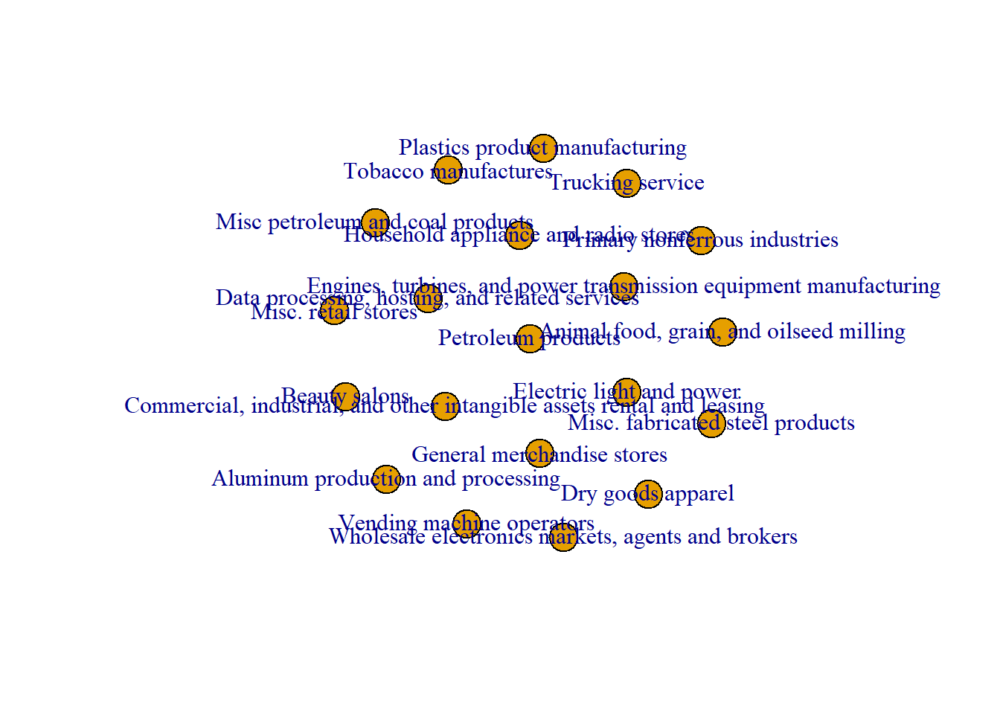
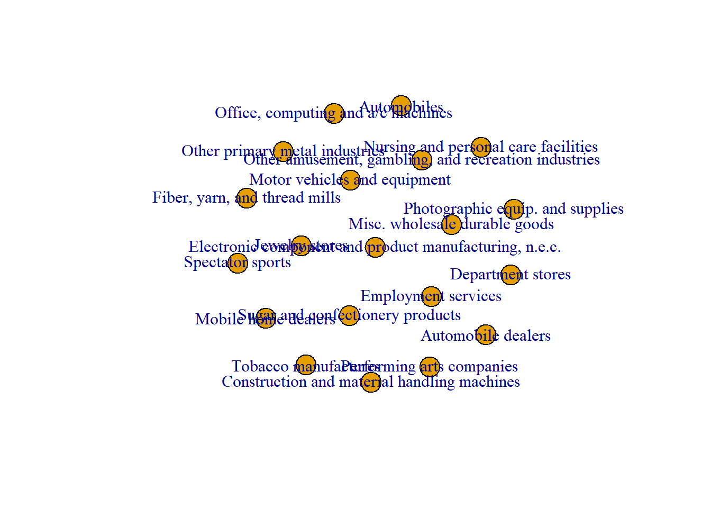
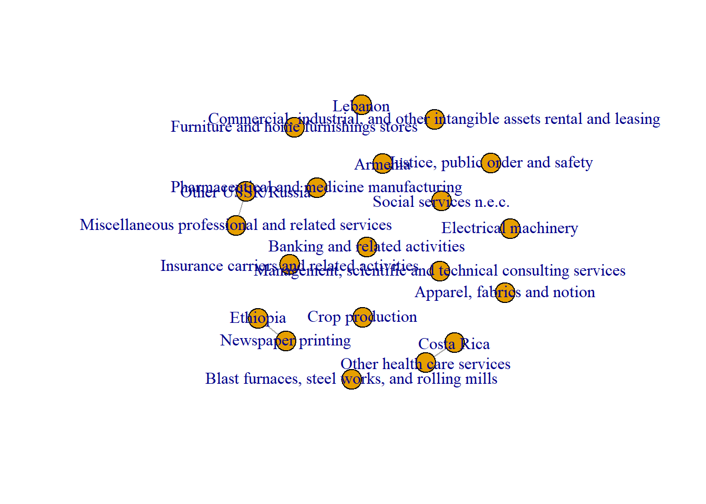

Identify an existing data set or collect your own data. Provide a thorough description of the network data and the protocols used to collect and code it. The information provided should be sufficient to allow someone to recreate your network data from the original source.
First we will invoke the ipumsr library to read in the data. The read_ipums_micro() function takes two arguments: the DDI file and the data file. The DDI file is an XML file that contains metadata about the data. The data file is a gzipped file that contains the data itself. Both files are located in the posts/ directory.
Code
library(ipumsr)
Warning: package 'ipumsr' was built under R version 4.1.3
Use of data from IPUMS CPS is subject to conditions including that users should
cite the data appropriately. Use command `ipums_conditions()` for more details.
##Scraping IPUMS to get Industry Codes
Now I will scrape the IPUMS website to also get the Codes for each Industry for my IND column.
Code
library(rvest)library(dplyr)# Base URLbase_url <- "https://cps.ipums.org"# Page URLpage_url <- "https://cps.ipums.org/cps-action/variables/IND#codes_section"# Read the HTML of the base pagemain_page <- read_html(page_url)# Find the links for different yearslinks <- main_page %>% html_nodes("a[href*='codes']") %>% html_attr("href")# Correct the links (remove the 'https://cps.ipums.org' if it exists)links <- gsub("https://cps.ipums.org", "", links)# Create the full URLsurls <- paste0(base_url, links)# Initialize a list to hold the scraped datadata_list <- list()# Loop through the URLsfor (url in urls) { # Read the HTML of the page page <- read_html(url) # Scrape the codes and descriptions dt <- page %>% html_nodes("dt") %>% html_text() dd <- page %>% html_nodes("dd") %>% html_text() # Combine the codes and descriptions into a data frame and add it to the list data_list[[url]] <- data.frame(Code = dt, Description = dd, stringsAsFactors = FALSE)}# Combine all the data frames into a single data frameindustry_codes <- bind_rows(data_list)# View the dataprint(industry_codes)##Save Occupational Codes as CSVwrite.csv(industry_codes, file = "industry_codes.csv")
Now let’s read in Occupational Codes
Code
industry_codes<-read.csv("industry_codes.csv")
Adding Occupational Codes to IND Column
Code
cps_data$IND_1_Description <- industry_codes$Description[match(cps_data$IND_1, industry_codes$Code)]cps_data$IND_1 <-NULL# Replace numerical codes with descriptions in IND_2 columncps_data$IND_2_Description <- industry_codes$Description[match(cps_data$IND_2, industry_codes$Code)]cps_data$IND_2 <-NULL
# Convert "SEX_1" to a factor with labelscps_data$SEX_1 <-factor(cps_data$SEX_1, labels =c("Male", "Female"))
Adding Country labels to Country Column Please note that the Census definees Country different from Race. Also, that the Census has historically asked about Country of Origin in different ways. For example, in 1970, the Census asked about Country of Origin for the first time.
Warning: package 'igraph' was built under R version 4.1.3
Attaching package: 'igraph'
The following object is masked from 'package:ipumsr':
%<-%
The following objects are masked from 'package:stats':
decompose, spectrum
The following object is masked from 'package:base':
union
Code
edge_matrix_country <-data.frame(from = filtered_cps_data$COUNTRY_1, # Replace with your actual column name for countriesto = filtered_cps_data$IND_1_Description)g_country <-graph_from_data_frame(d = edge_matrix_country, directed =FALSE)
Code
summary(g_country)
IGRAPH 8a487a3 UN-- 296 1548 --
+ attr: name (v/c)
Code
cat("Graph Summary:\n")
Graph Summary:
Code
cat("Number of Nodes:", vcount(g_country), "\n")
Number of Nodes: 296
Code
cat("Number of Edges:", ecount(g_country), "\n")
Number of Edges: 1548
Code
cat("Diameter:", diameter(g_country), "\n")
Diameter: 7
Code
filtered_cps_data <-na.omit(cps_data[, c("RACE_1", "IND_1_Description")])# Create the edge dataframe with proper column namesedge_matrix_race <-data.frame(from = filtered_cps_data$RACE_1,to = filtered_cps_data$IND_1_Description)# Convert the edge dataframe to an igraph objectg_race <-graph_from_data_frame(d = edge_matrix_race, directed =FALSE)
Code
# Edge list for Industry and Sexfiltered_cps_data <-na.omit(cps_data[, c("SEX_1", "IND_1_Description")])# Create the edge dataframe with proper column namesedge_matrix_sex <-data.frame(from = filtered_cps_data$SEX_1,to = filtered_cps_data$IND_1_Description)# Convert the edge dataframe to an igraph objectg_sex <-graph_from_data_frame(d = edge_matrix_sex, directed =FALSE)
a.Where is the data set from, and what is being measured? Was the original data in matrix, edgelist or affiliation network format?
The data that I will be using is Data from Current Population Survey provided by Integrated Public Use Microdata Series(IPUMS) which was created by University Of Minessota.
The Current Population Survey originally comes from the Bureau of Labor,and IPUMS is a data aggregator that harmonized the CPS Data creating consistent variables across years to facilitate longitudinal analysis.
b.Is this network a sample or does it represent the universe of cases? If a sample, is the sample adequate/random/suitable?
The Data is a sample collected by the Bureau of Labor Statistics. The sample is adequate and suitable because it is a random sample of the population.
Also, the CPS dataset is designed to answer questions regarding Labor Force Demographics.
What constitutes a vertex/node in these data? What is the level of analysis (person, organization, etc.)? How many nodes are in the data set?
The level are analaysis are people. Each node represents a person responding to the survey. The edges represent a connection of industry to their self reported race, gender or country of origin in the Census.
In terms of the the numbers of nodes, it varies by each graph.
g_race Number of Nodes: 567 Number of Edges: 2058407 Diameter: 3 g_country Number of Nodes: 296 Number of Edges: 1548 Diameter: 7 g_sex Number of Nodes: 541 Number of Edges: 2058407 Diameter: 4
d.What constitutes a tie in these data? Is the tie weighted or unweighted? If weighted, what is the range of tie values? What is the tie measuring, and is the measure adequate?
The Tie that this Data is measuring is the tie between the Industry a Person is in and the Demographic variables that a person has such as Race, Coutnry of Origin and Gender.
Were any transformations used (e.g., thresholds, one-mode projection) to create final network data used in analysis?
There were no transformations suhc as thresholds or one-mode projection used to create the final network data used in analysis.
##Answers to Question 2
Provide additional descriptive statistics about your network data. The information provided should be sufficient to allow someone to understand the distinctive features of your network data. Please include a substantive discussion or interpretation of the meaning of each of these features – this is not merely a statistical report. In addition to basic information about network size and range of tie values (provided above), look at the following: number of components (if not fully connected) proportion of nodes in giant component and proportion of unconnected nodes/singletons (if any) (fully connected graphs or subgraphs only) Network diameter (the length of the longest geodesic in the network). Maybe distribution of network geodesics. graph density average node degree and degree distribution
number of components
Code
components_sex <-decompose.graph(g_sex)components_race <-decompose.graph(g_race)components_country <-decompose.graph(g_country)# Number of Componentscat("Number of Components:\n")
g_sex: 0.5009242: About 50.09% of the nodes in the g_sex graph are part of the largest connected component.
g_race: 0.5837743: About 58.38% of the nodes in the g_race graph are part of the largest connected component.
g_country: 0.1790541: Only about 17.91% of the nodes in the g_country graph are part of the largest connected component.
C.(fully connected graphs or subgraphs only) Network diameter (the length of the longest geodesic in the network). Maybe distribution of network geodesics.
Average Node Degree: g_sex: 7609.638 g_race: 7260.695 g_country: 10.45946
Code
cat("Degree Distribution Summary:\n")
Degree Distribution Summary:
Code
cat("g_sex:\n")
g_sex:
Code
summary(degree_distribution(g_sex))
Min. 1st Qu. Median Mean 3rd Qu. Max.
0.000e+00 0.000e+00 0.000e+00 9.320e-07 0.000e+00 5.545e-03
Code
cat("\ng_race:\n")
g_race:
Code
summary(degree_distribution(g_race))
Min. 1st Qu. Median Mean 3rd Qu. Max.
0.000e+00 0.000e+00 0.000e+00 5.740e-07 0.000e+00 7.055e-03
Code
cat("\ng_country:\n")
g_country:
Code
summary(degree_distribution(g_country))
Min. 1st Qu. Median Mean 3rd Qu. Max.
0.000000 0.000000 0.000000 0.001146 0.000000 0.351351
3.Provide a visualization of the network. If the network is too large to be anything more than a hairball, visualize a subset of the graph with a rationale for selecting that subset
Visualization for g_race
Code
library(igraph)subset_vertices <-sample(V(g_race), size =20)# Get the labels of the selected raceslabels <-V(g_race)$RACE_1[subset_vertices]# Create a subgraph containing only the subset of vertices and their incident edgessubgraph_race <-induced_subgraph(g_race, subset_vertices)# Plot the subgraph with vertex labels and edgesplot(subgraph_race, vertex.label = labels, edge.arrow.size =0.5)

Visualization for g_sex
Code
subset_vertices <-sample(V(g_sex), size =20)# Get the labels of the selected sexeslabels <-V(g_sex)$SEX_1[subset_vertices]# Create a subgraph containing only the subset of vertices and their incident edgessubgraph_sex <-induced_subgraph(g_sex, subset_vertices)# Plot the subgraph with vertex labels and edgesplot(subgraph_sex, vertex.label = labels, edge.arrow.size =0.5)

Visualization for g_country
Code
subset_vertices <-sample(V(g_country), size =20)# Get the labels of the selected countrieslabels <-V(g_country)$COUNTRY_1[subset_vertices]# Create a subgraph containing only the subset of vertices and their incident edgessubgraph_country <-induced_subgraph(g_country, subset_vertices)# Plot the subgraph with vertex labels and edgesplot(subgraph_country, vertex.label = labels, edge.arrow.size =0.5)

Identify prominent nodes in the graph using at least one from each group of measures (a and b) below and interpret your results.
Measures of popularity/status: degree centrality, betweenness centrality, eigenvector centrality
b.Measures of role/power: structural equivalence (use a similarity measure from week 6), constraint, betweenness, Gould/Fernandez brokerage.
Measures for a & b for all three graphs.
g_sex
Code
# Calculate measures of popularity/statusdegree_centrality_sex <-degree(g_sex)betweenness_centrality <-betweenness(g_sex)eigenvector_centrality <-eigen_centrality(g_sex)$vector# Print the measures of popularity/statuscat("Centrality Measures for Gender\n")
Centrality Measures for Gender
Code
# In-degreecat("Degree Centrality :\n")
Degree Centrality :
Code
print(head(sort(degree_centrality_sex , decreasing =TRUE), n =10))
Female Agriculture
1073361 994549
Male Elementary and secondary education
985046 37346
Hospitals Lodging places except hotels and motels
36493 34071
Elementary and secondary schools All construction
30524 29114
Eating and drinking places Restaurants and other food services
26719 21905
print(head(sort(eigenvector_centrality, decreasing =TRUE), n =10))
Agriculture Female
1.00000000 0.80763220
Male Elementary and secondary education
0.59847126 0.03934121
Hospitals Elementary and secondary schools
0.03890323 0.03238921
Lodging places except hotels and motels Eating and drinking places
0.02994603 0.02698978
All construction Restaurants and other food services
0.02524066 0.02176914
Code
##Racedegree_centrality_race <-degree(g_race)betweenness_centrality_race <-betweenness(g_race)eigenvector_centrality_race <-eigen_centrality(g_race)$vectorcat("Degree Centrality For Race:\n")
Degree Centrality For Race:
Code
print(head(sort(degree_centrality_race , decreasing =TRUE), n =10))
White Agriculture
1741287 994549
Black Asian only
199156 40137
Elementary and secondary education Hospitals
37346 36493
Lodging places except hotels and motels Elementary and secondary schools
34071 30524
All construction Eating and drinking places
29114 26719
Code
cat("\nBetweenness Centrality for Race :\n")
Betweenness Centrality for Race :
Code
print(head(sort(betweenness_centrality_race, decreasing =TRUE), n =10))
White Agriculture
1.546249e+05 1.156106e+04
Black Asian only
1.459675e+03 1.161353e+02
Asian or Pacific Islander Elementary and secondary schools
1.599241e+01 1.185558e+01
Restaurants and other food services Lodging places except hotels and motels
1.103316e+01 1.052055e+01
American Indian/Aleut/Eskimo Other (single) race, n.e.c.
9.841170e+00 9.786563e+00
Code
cat("\nEigenvector Centrality For Race:\n")
Eigenvector Centrality For Race:
Code
print(head(sort(eigenvector_centrality_race, decreasing =TRUE), n =10))
Agriculture White
1.00000000 0.99677157
Black Elementary and secondary education
0.13006054 0.03946504
Lodging places except hotels and motels Hospitals
0.03711324 0.03598066
All construction Elementary and secondary schools
0.03196741 0.03195224
Eating and drinking places Asian only
0.02729890 0.02318802
Code
degree_centrality_country <-degree(g_country)betweenness_centrality_country <-betweenness(g_country)eigenvector_centrality_country <-eigen_centrality(g_country)$vectorcat("Degree Centrality for Country:\n")
Degree Centrality for Country:
Code
print(head(sort(degree_centrality_country, decreasing =TRUE), n =10))
Agriculture Mexico Germany Japan
872 255 94 69
Canada England China India
68 61 56 54
Puerto Rico Other USSR/Russia
49 44
Code
cat("\nBetweenness Centrality for Country:\n")
Betweenness Centrality for Country:
Code
print(head(sort(betweenness_centrality_country, decreasing =TRUE), n =10))
Agriculture Mexico Germany Canada
36974.514 13941.760 4774.154 3212.894
India England Japan Philippines
3202.494 3093.414 2789.836 2536.361
Puerto Rico Other USSR/Russia
1563.579 1556.762
Code
cat("\nEigenvector Centrality for Country:\n")
Eigenvector Centrality for Country:
Code
print(head(sort(eigenvector_centrality_country, decreasing =TRUE), n =10))
Agriculture Mexico Germany Japan
1.0000000 0.7194462 0.3044346 0.2597466
Canada China England Puerto Rico
0.2104668 0.1995398 0.1787533 0.1609122
Other USSR/Russia India
0.1495350 0.1438403
Filtering Graphs to identify Industries domianted by Race and Gender
c.Clearly define the measure that you are using and explain what being high/low on the measure indicates
I’m going to filter Degree Centrality of White among Race and Male among Sex to see industries domianted by White Males.
Code
filtered_edges <- edge_matrix_race[edge_matrix_race$from =="White", ]# Create a new igraph object with the filtered edgesg_white <-graph_from_data_frame(filtered_edges, directed =FALSE)eigenvector_centrality_white <-eigen_centrality(g_white)$vectorprint(head(sort(eigenvector_centrality_white[-1], decreasing =TRUE), n =10))
Agriculture Elementary and secondary education
0.99426485 0.03936349
Lodging places except hotels and motels Hospitals
0.03730022 0.03567444
All construction Elementary and secondary schools
0.03208422 0.03191067
Eating and drinking places Grocery stores
0.02722133 0.02255729
Restaurants and other food services College and universities
0.02101467 0.01444163
Agriculture Lodging places except hotels and motels
0.99157020 0.06850855
All construction Eating and drinking places
0.06133303 0.02564295
Grocery stores Restaurants and other food services
0.02508972 0.02388950
Elementary and secondary education Trucking service
0.02289088 0.01940978
Hospitals Elementary and secondary schools
0.01867840 0.01683119
e.Identify the node(s) that have remarkable (high/low/higher/lower than expected) values on the measure in question.
One thing that I found suprising was that the eigenvector Industries for “White” and “Male” were similar.
Another thing I didn’t expect was that Hospitals were Male Dominated. Perhaps, that is due to Hospital Management being male-lead.
f.What sort of expectations do we have for the behavior of the node(s) identified, and does their observed behavior fulfill these expectations?
One thing that I found interesting was that the Men had the highest betweenness centrality, showing they control the flow of connections between Industries.
Code
# Louvain algorithm for community detectionlouvain_race <-cluster_louvain(g_race)louvain_country <-cluster_louvain(g_country)louvain_sex <-cluster_louvain(g_sex)# Community membershipcommunity_race <-membership(louvain_race)community_country <-membership(louvain_country)community_sex <-membership(louvain_sex)
For Loop for Communities among g_race
Code
for (i inunique(community_race)) {cat("Community", i, ": ") vertices <-V(g_race)$name[community_race == i]print(vertices)}
Community 1 : [1] "White"
[2] "Other (single) race, n.e.c."
[3] "Asian or Pacific Islander"
[4] "Black-Hawaiian/Pacific Islander"
[5] "Black-American Indian-Asian"
[6] "American Indian-Hawaiian/Pacific Islander"
[7] "White-American Indian-Asian-Hawaiian/Pacific Islander"
[8] "Agriculture"
[9] "Bowling alleys, and billiard and pool parlors"
[10] "Insurance"
[11] "Food and related products"
[12] "Machinery except electrical"
[13] "Eating and drinking places"
[14] "Cement, concrete, gypsum, and plaster products"
[15] "Lodging places except hotels and motels"
[16] "Electrical machinery, equipment, and supplies"
[17] "Pulp, paper, and paper-board mills"
[18] "Misc food preparations and kindred products"
[19] "Special trade contractors"
[20] "College and universities"
[21] "Paperboard containers and boxes"
[22] "General building contractors"
[23] "Banking"
[24] "Elementary and secondary education"
[25] "Wholesalers"
[26] "Apparel"
[27] "Ship and boat building and repairing"
[28] "General contractors--except building"
[29] "Misc. fabricated metal products"
[30] "Beauty shops"
[31] "Trucking service"
[32] "Furniture and house furniture stores"
[33] "Paints, varnishes, and related products"
[34] "Drugs and medicines"
[35] "State public administration"
[36] "Fuel and ice retailing"
[37] "Liquor stores"
[38] "Local public administration"
[39] "Miscellaneous entertainment and recreation se"
[40] "Metalworking machinery"
[41] "Accounting, auditing, and bookkeeping services"
[42] "Auto repair and related services"
[43] "Laundering, cleaning, and dyeing services"
[44] "Electronic computing equipment"
[45] "Business management and consulting"
[46] "Printing, publishing, and allied industries"
[47] "Fabricated structural metal products"
[48] "Religious organizations"
[49] "Medical and other health services, except hos"
[50] "Real estate including real estate insurance law offices"
[51] "Misc retail stores"
[52] "Dairy product stores and milk retailing"
[53] "Gasoline service stations"
[54] "Commercial research, development and testing labs"
[55] "Office and accounting machines"
[56] "Limited price variety stores"
[57] "Detective and protective service"
[58] "Water supply"
[59] "Misc wood products"
[60] "Retail florists"
[61] "Petroleum products"
[62] "Credit agencies"
[63] "Dairy products"
[64] "Farm machinery and equipment"
[65] "Grocery stores"
[66] "Fabricated structural steel products"
[67] "Dressmaking shops"
[68] "Household appliances"
[69] "Miscellaneous repair services"
[70] "Drugs, chemicals, and allied products"
[71] "Misc. plastic products"
[72] "Electric light and power"
[73] "Rubber products"
[74] "Engines and turbines"
[75] "Drug stores"
[76] "Floor covering except hard surfaces"
[77] "Crude petroleum and natural gas extractions"
[78] "Business service"
[79] "Misc nonmetallic mineral and stone products"
[80] "Grain-mill products"
[81] "Accounting, auditing, and bookkeeping service"
[82] "Nonmetallic mining and quarring except fuel"
[83] "Pottery and related products"
[84] "Printing and publishing"
[85] "Metal industries"
[86] "Newspaper printing"
[87] "Petroleum refining"
[88] "Misc. fabricated steel products"
[89] "Aircraft and parts"
[90] "Misc paper and pulp products"
[91] "Dyeing and finishing textiles, except knit pr"
[92] "Sawmills, planing mills, and millwork"
[93] "Primary nonferrous industries"
[94] "Electrical goods, hardware, and plumbing equi"
[95] "Misc. general merchandise stores"
[96] "Blast furnaces, steel works, and rolling mills"
[97] "Photographic equipment and supplies"
[98] "Telegraph"
[99] "Construction and material handling machines"
[100] "Nonprofit membership organizations"
[101] "Electrical repair shops"
[102] "Canning and preserving fruits, veggies, and seafood"
[103] "Advertising"
[104] "General merchandise stores"
[105] "Furniture and fixtures"
[106] "Screw machine products"
[107] "Gas and steam supply systems"
[108] "Security and commodity brokerage and investments"
[109] "Coal mining"
[110] "Telephone"
[111] "Blast furnaces, steel works, & rolling mills"
[112] "Beverage industries"
[113] "Air transportation"
[114] "Libraries"
[115] "Other and not specified utilities"
[116] "Miscellaneous business services"
[117] "Chemicals"
[118] "Cutlery, handtools and other hardware"
[119] "Office of health practitioners"
[120] "Glass and glass products"
[121] "Household appliance and radio stores"
[122] "Metal stamping"
[123] "Farm products--raw materials"
[124] "Misc. machinery"
[125] "Other retail establishments"
[126] "Electric-gas utilities"
[127] "Leather products, except footwear"
[128] "Misc. chemicals"
[129] "Metals and minerals"
[130] "Harware and plumbing equipment"
[131] "Dry goods apparel"
[132] "Other primary nonferrous industries"
[133] "Electrical goods"
[134] "Radio broadcasting and television"
[135] "Not specified contractors"
[136] "Scrap and waste materials"
[137] "Metal mining"
[138] "Computer programming service"
[139] "Watches, clocks, and clockwork operated machi"
[140] "Legal services"
[141] "Misc. repair service"
[142] "Misc petroleum and coal products"
[143] "Auto repair services and garages"
[144] "Machinery, equipment, and supplies"
[145] "Shoe stores"
[146] "Structural clay products"
[147] "Not specified wholesale trade"
[148] "Office of chiropractors"
[149] "Pipelines, except natural gas"
[150] "Railroad and misc transport equipment"
[151] "Not specified chemical and allied products"
[152] "Not specified machinery"
[153] "Office, computing and a/c machines"
[154] "Automobiles"
[155] "Other rubber products, plastic footware, belting"
[156] "All construction"
[157] "Auto. Repair and related services"
[158] "Office of dentists"
[159] "Railroads and railway express service"
[160] "Department and mail order establishments"
[161] "Electrical machinery, equipment and supplies"
[162] "Direct selling establishments"
[163] "Water transportation"
[164] "Engineering and architectural services"
[165] "Motor vehicles dealers"
[166] "Farm and garden supplies"
[167] "Not specified educational services"
[168] "Miscellaneous entertainment and recreation services"
[169] "Hardware and farm implement stores"
[170] "Justice, public order and safety"
[171] "Real estate, including real estate insurance law offices"
[172] "Scientific and controlling equipments"
[173] "Other primary metal industries"
[174] "Guided missiles, space vehicles and parts"
[175] "Misc. retail stores"
[176] "Public finance, taxation and monetary policy"
[177] "Repair services"
[178] "Office of phycisians"
[179] "Auto and home supplies stores"
[180] "Electrical machinery"
[181] "Misc. vehicle dealers"
[182] "Administration of environmental quality and housing programs"
[183] "Apparel and accessories stores, except shoe"
[184] "Sewing, needlework and piecegood stores"
[185] "Sporting goods, bicycles and hobby stores"
[186] "Executive and legislative offices"
[187] "Groceries and related products"
[188] "Theaters and motion pictures"
[189] "Lumber and building material retailing"
[190] "Industrial and misc. chemicals"
[191] "Misc. personal services"
[192] "Adminstration of economic programs"
[193] "Radio, television and communication equipment"
[194] "Toys, amusement and sporting goods"
[195] "Membership organizations"
[196] "Other nondurables"
[197] "Footwear, except rubber"
[198] "Paper and paper products"
[199] "Agricultural chemicals"
[200] "Mail order houses"
[201] "Alcoholic beverages"
[202] "Bakery products"
[203] "Misc. manufacturing industries"
[204] "Federal government"
[205] "Funeral services and crematories"
[206] "Apparel, fabrics and notion"
[207] "State government"
[208] "Lumber and construction materials"
[209] "Metal forging and stampings"
[210] "Misc. wholesale nondurable goods"
[211] "Motor vehicles and equipment"
[212] "Railroad and railway"
[213] "Museums, art galleries, zoos"
[214] "Food stores"
[215] "Photographic equip. and supplies"
[216] "Jewelry stores"
[217] "Miscellaneous professional and related services"
[218] "Business services"
[219] "Book and stationary stores"
[220] "Nonmetallic mining and quarrying, except fuel"
[221] "Noncommercial education and scientific research"
[222] "Wholesale trade, n.s."
[223] "Optical and health services"
[224] "Dairy product stores"
[225] "Drugs"
[226] "Ordnance"
[227] "Services incidental to transportation"
[228] "Plastic, synthetic resin except fibers"
[229] "Saving and loan associations"
[230] "Business, trade and vocational schools"
[231] "Not specified electrical machinery etc."
[232] "Office of optometrists"
[233] "Retail bakeries"
[234] "Retail nurseries and garden stores"
[235] "Primary aluminium industry"
[236] "Misc. wholesale durable goods"
[237] "Furniture and home furnishing"
[238] "Elec. Repair shops"
[239] "Manufacturing industries, n.s."
[240] "Watches, clocks, and clockwork operated machinery"
[241] "Vending machine operators"
[242] "Cycles and misc. transportation equipment"
[243] "Mobile dwellings and campers"
[244] "Sporting goods, toys and hobby stores"
[245] "Mobile home dealers"
[246] "Metal industries, n.s."
[247] "Not specified electrical and hardware products"
[248] "Not specified professional equipment"
[249] "Misc. entertainment and recreational services"
[250] "Transportation (other)"
[251] "Radio, television and computer stores"
[252] "Family child care homes"
[253] "Insurance carriers and related activities"
[254] "Building material and supplies dealers"
[255] "Automobile dealers"
[256] "Real estate"
[257] "Advertising and related services"
[258] "Independent artists, performing arts, spectator sports, and related industries"
[259] "Furniture and home furnishings stores"
[260] "Management, scientific and technical consulting services"
[261] "Offices of dentists"
[262] "Elementary and secondary schools"
[263] "Other schools, instruction, and educational services"
[264] "Petroleum and petroleum product wholesalers"
[265] "Landscaping services"
[266] "Business, professional, political, and similar organizations"
[267] "Offices of other health practitioners"
[268] "Specialized design services"
[269] "Architectural, engineering, and related services"
[270] "Used merchandise stores"
[271] "Automotive repair and maintenance"
[272] "Structural metals and tank and shipping container manufacturing"
[273] "Veterinary services"
[274] "Paint, coating, and adhesives manufacturing"
[275] "Sawmills and wood preservation"
[276] "Electric power generation, transmission and distribution"
[277] "Printing and related support activities"
[278] "Industrial and miscellaneous chemicals"
[279] "Miscellaneous durable goods"
[280] "Electrical lighting, equipment, and supplies manufacturing, n.e.c."
[281] "Miscellaneous fabricated metal products manufacturing"
[282] "Furniture and related products manufacturing"
[283] "Crop production"
[284] "Plastics product manufacturing"
[285] "Iron and steel mills and steel product manufacturing"
[286] "Libraries and archives"
[287] "Prefabricated wood buildings and mobile homes"
[288] "Truck transportation"
[289] "Support activities for mining"
[290] "Lawn and garden equipment and supplies stores"
[291] "Toys, amusement, and sporting goods manufacturing"
[292] "Publishing, except newspapers and software"
[293] "Agricultural implement manufacturing"
[294] "Sewage treatment facilities"
[295] "Newspaper publishers"
[296] "Beverage manufacturing"
[297] "Fuel dealers"
[298] "Management of companies and enterprises"
[299] "Drinking places, alcoholic beverages"
[300] "Structural clay product manufacturing"
[301] "Commercial, industrial, and other intangible assets rental and leasing"
[302] "Hardware, plumbing and heating equipment, and supplies"
[303] "Navigational, measuring, electromedical, and control instruments manufacturing"
[304] "Alcoholic beverage wholesalers"
[305] "Auto parts, accessories, and tire stores"
[306] "Book stores and news dealers"
[307] "Commercial and service industry machinery manufacturing"
[308] "Offices of optometrists"
[309] "Gift, novelty, and souvenir shops"
[310] "Aluminum production and processing"
[311] "Dairy product manufacturing"
[312] "Furniture and home furnishings"
[313] "Professional and commercial equipment and supplies"
[314] "Miscellaneous nondurable goods wholesalers"
[315] "Machine shops, turned product, screw, nut, and bolt manufacturing"
[316] "Other motor vehicle dealers"
[317] "Household appliance stores"
[318] "Commercial and industrial machinery and equipment repair and maintenance"
[319] "Metalworking machinery manufacturing"
[320] "Funeral homes, cemeteries and crematories"
[321] "Other information services"
[322] "Machinery manufacturing, n.e.c."
[323] "Miscellaneous nonmetallic mineral product manufacturing"
[324] "Sporting goods, camera, and hobby and toy stores"
[325] "Miscellaneous retail stores"
[326] "Cement, concrete, lime, and gypsum product manufacturing"
[327] "Fruit and vegetable preserving and specialty food manufacturing"
[328] "Recyclable material"
[329] "Motor vehicles, parts and supplies"
[330] "Lumber and other construction materials"
[331] "Foundries"
[332] "Rubber products, except tires, manufacturing"
[333] "Miscellaneous wood products"
[334] "Animal food, grain, and oilseed milling"
[335] "Cutlery and hand tool manufacturing"
[336] "Farm product raw material wholesalers"
[337] "Pulp, paper, and paperboard mills"
[338] "Sewing, needlework and piece goods stores"
[339] "Construction mining and oil field machinery manufacturing"
[340] "Hardware stores"
[341] "Personal and household goods repair and maintenance"
[342] "Other transportation equipment manufacturing"
[343] "Music stores"
[344] "Farm supplies wholesalers"
[345] "Paper and paper product wholesalers"
[346] "Metal forgings and stampings"
[347] "Nonferrous metal, except aluminum, production and processing"
[348] "Coating, engraving, heat treating and allied activities"
[349] "Resin, synthetic rubber and fibers, and filaments manufacturing"
[350] "Agricultural chemical manufacturing"
[351] "Pipeline transportation"
[352] "Recreational vehicle parks and camps, and rooming and boarding houses"
[353] "Veneer, plywood, and engineered wood products"
[354] "Bowling centers"
[355] "Leather tanning and products, except footwear manufacturing"
[356] "Engines, turbines, and power transmission equipment manufacturing"
[357] "Other consumer goods rental"
[358] "Railroad rolling stock manufacturing"
[359] "Miscellaneous petroleum and coal products"
[360] "Metals and minerals, except petroleum"
[361] "Textile and fabric finishing and coating mills"
[362] "Not specified metal industries"
[363] "Not specified type of mining"
[364] "Hardware, plumbing and heating equipment, and supplies, merchant wholesalers"
[365] "Furniture and related product manufacturing"
[366] "Electrical and electronic goods, merchant wholesalers"
[367] "Independent artists, writers, and performers"
Community 2 : [1] "Black"
[2] "White-American Indian-Hawaiian/Pacific Islander"
[3] "Barber and Beauty shops"
[4] "Services to dwellings and other buildings"
[5] "Federal public admininstration"
[6] "Private households"
[7] "Confectionary and related products"
[8] "Tobacco manufactures"
[9] "Hotels and motels"
[10] "Street railways and bus lanes"
[11] "Sanitary services"
[12] "Misc. fabricated textile products"
[13] "Misc personal services"
[14] "Employment and temporary help services"
[15] "Welfare and religious services"
[16] "Postal service"
[17] "Automobile service except repair"
[18] "Yarn, threat, and fabric mills"
[19] "Logging"
[20] "Barber shops"
[21] "Welfare services"
[22] "Warehousing and storage"
[23] "Misc chemicals and allied products"
[24] "Other primary iron and steel industries"
[25] "Apparel and accessories"
[26] "Soaps and cosmetics"
[27] "Leather: tanned, curried, and finished"
[28] "Canning and preserving fruits, veggies, and s"
[29] "Hospitals"
[30] "Shoe repair shops"
[31] "Health services"
[32] "Private household"
[33] "Residential care facilties without nursing"
[34] "Social services n.e.c."
[35] "Nursing and personal care facilities"
[36] "Motor vehicles and motor vehicle equipment"
[37] "Administration of human resource programs"
[38] "Personnel supply services"
[39] "National security and int. affairs"
[40] "Child day care services"
[41] "General government n.e.c."
[42] "Computer programmer service"
[43] "Meat products"
[44] "Taxicab service"
[45] "Floor covering except hard surface"
[46] "Tires and inner tubes"
[47] "Knitting mills"
[48] "Unemployed, last job armed forces"
[49] "Job training and voc. Rehab. Services"
[50] "Dyeing and finishing textiles, except knit products"
[51] "Misc textile mill products"
[52] "Labor unions"
[53] "Department stores"
[54] "Services to buildings and dwellings"
[55] "Investigation and security services"
[56] "Justice, public order, and safety activities"
[57] "Wired telecommunications carriers"
[58] "Carpets and rugs manufacturing"
[59] "Employment services"
[60] "Motor vehicles and motor vehicle equipment manufacturing"
[61] "Nursing care facilities"
[62] "Individual and family services"
[63] "Public finance activities"
[64] "Couriers and messengers"
[65] "Household appliance manufacturing"
[66] "Car washes"
[67] "Footwear and leather goods repair"
[68] "Vocational rehabilitation services"
[69] "Home health care services"
[70] "Residential care facilities, without nursing"
[71] "Postal Service"
[72] "Rail transportation"
[73] "Business support services"
[74] "Bus service and urban transit"
[75] "Fiber, yarn, and thread mills"
[76] "Community food and housing, and emergency services"
[77] "Animal slaughtering and processing"
[78] "Fabric mills, except knitting"
[79] "Taxi and limousine service"
[80] "Bakeries, except retail"
[81] "Sugar and confectionery products"
[82] "Tire manufacturing"
[83] "Armed forces"
[84] "Other general government and support"
[85] "Tobacco manufacturing"
[86] "Sound recording industries"
[87] "Not specified utilities"
[88] "Performing arts companies"
[89] "Psychiatric and substance abuse hospitals"
[90] "Machinery manufacturing, n.e.c. or not specified"
[91] "General merchandise stores, including warehouse clubs and supercenters"
Community 3 : [1] "American Indian/Aleut/Eskimo"
[2] "White-Black-Asian"
[3] "Black-American Indian"
[4] "Asian only"
[5] "White-Asian"
[6] "Hawaiian/Pacific Islander only"
[7] "White-American Indian"
[8] "White-Black"
[9] "Two or three races, unspecified"
[10] "White-Hawaiian/Pacific Islander"
[11] "American Indian-Asian"
[12] "Asian-Hawaiian/Pacific Islander"
[13] "White-Asian-Hawaiian/Pacific Islander"
[14] "White-Black-American Indian"
[15] "Four or five races, unspecified"
[16] "Black-Asian"
[17] "White-American Indian-Asian"
[18] "White-Black-American Indian-Asian"
[19] "White-Black--Hawaiian/Pacific Islander"
[20] "Not specified retail trade"
[21] "Not specified food industries"
[22] "Colleges and universities, including junior colleges"
[23] "Restaurants and other food services"
[24] "Outpatient care centers"
[25] "Other health care services"
[26] "Waste management and remediation services"
[27] "Clothing and accessories, except shoe stores"
[28] "Banking and related activities"
[29] "Non-depository credit and related activities"
[30] "Computer systems design and related services"
[31] "Aircraft and parts manufacturing"
[32] "Accounting, tax preparation, bookkeeping and payroll services"
[33] "Offices of physicians"
[34] "Other amusement, gambling, and recreation industries"
[35] "Dry cleaning and laundry services"
[36] "Cut and sew apparel manufacturing"
[37] "Traveler accommodation"
[38] "Museums, art galleries, historical sites, and similar institutions"
[39] "Other direct selling establishments"
[40] "Beauty salons"
[41] "Executive offices and legislative bodies"
[42] "Electronic component and product manufacturing, n.e.c."
[43] "Data processing, hosting, and related services"
[44] "Scientific research and development services"
[45] "Motion pictures and video industries"
[46] "Groceries and related product wholesalers"
[47] "Aerospace product and parts manufacturing"
[48] "Radio, TV, and computer stores"
[49] "Administration of economic programs and space research"
[50] "Other administrative, and other support services"
[51] "Nail salons and other personal care services"
[52] "Medical equipment and supplies manufacturing"
[53] "Pharmacies and drug stores"
[54] "Ship and boat building"
[55] "Other telecommunication services"
[56] "Securities, commodities, funds, trusts, and other financial investments"
[57] "Gasoline stations"
[58] "Seafood and other miscellaneous foods, n.e.c."
[59] "Savings institutions, including credit unions"
[60] "Health and personal care, except drug stores"
[61] "Jewelry, luggage, and leather goods stores"
[62] "Electronic and precision equipment repair and maintenance"
[63] "Pharmaceutical and medicine manufacturing"
[64] "Miscellaneous general merchandise stores"
[65] "Specialty food stores"
[66] "National security and international affairs"
[67] "Not specified manufacturing industries"
[68] "Beer, wine, and liquor stores"
[69] "Civic, social, advocacy organizations, and grantmaking and giving services"
[70] "Glass and glass product manufacturing"
[71] "Not specified machinery manufacturing"
[72] "Communications, audio, and video equipment manufacturing"
[73] "Drugs, sundries, and chemical and allied product wholesalers"
[74] "Miscellaneous paper and pulp products"
[75] "Travel arrangements and reservation services"
[76] "Computer and peripheral equipment manufacturing"
[77] "Footwear manufacturing"
[78] "Other professional, scientific and technical services"
[79] "Wholesale electronics markets, agents and brokers"
[80] "Other personal services"
[81] "Office supplies and stationary stores"
[82] "Miscellaneous manufacturing, n.e.c."
[83] "Internet publishing and broadcasting"
[84] "Radio and television broadcasting and cable"
[85] "Scenic and sightseeing transportation"
[86] "Automotive equipment rental and leasing"
[87] "Apparel, fabrics, and notions wholesalers"
[88] "Video tape and disk rental"
[89] "Soap, cleaning compound, and cosmetic manufacturing"
[90] "Electronic shopping"
[91] "Apparel accessories and other apparel manufacturing"
[92] "Internet service providers"
[93] "Business, technical, and trade schools and training"
[94] "Pottery, ceramics, and related products manufacturing"
[95] "Textile product mills except carpets and rugs"
[96] "Software publishing"
[97] "Electronic auctions"
[98] "Internet publishing and broadcasting and web search portals"
[99] "Cut and sew, and apparel accessories and other apparel manufacturing"
[100] "General medical and surgical hospitals, and specialty (except psychiatric and substance abuse) hospitals"
[101] "Supermarkets and other grocery (except convenience) stores"
[102] "Lessors of real estate, and offices of real estate agents and brokers"
[103] "Real estate property managers, offices of real estate appraisers, and other activities related to real estate "
[104] "Insurance carriers"
[105] "Convenience Stores"
[106] "Agencies, brokerages, and other insurance related activities"
[107] "Electronic shopping and mail-order houses"
[108] "Promoters of performing arts, sports, and similar events, agents and managers for artists, athletes, entertainers, and other public figures"
[109] "Spectator sports"
For Loop for Communities among g_sex
Code
for (i inunique(community_sex)) {cat("Community", i, ": ") vertices <-V(g_sex)$name[community_sex == i]print(vertices)}
Community 1 : [1] "Female"
[2] "Male"
[3] "Agriculture"
[4] "Bowling alleys, and billiard and pool parlors"
[5] "Insurance"
[6] "Food and related products"
[7] "Machinery except electrical"
[8] "Eating and drinking places"
[9] "Cement, concrete, gypsum, and plaster products"
[10] "Lodging places except hotels and motels"
[11] "Electrical machinery, equipment, and supplies"
[12] "Pulp, paper, and paper-board mills"
[13] "Misc food preparations and kindred products"
[14] "Barber and Beauty shops"
[15] "Special trade contractors"
[16] "College and universities"
[17] "Paperboard containers and boxes"
[18] "Services to dwellings and other buildings"
[19] "General building contractors"
[20] "Banking"
[21] "Elementary and secondary education"
[22] "Wholesalers"
[23] "Federal public admininstration"
[24] "Private households"
[25] "Apparel"
[26] "Ship and boat building and repairing"
[27] "General contractors--except building"
[28] "Misc. fabricated metal products"
[29] "Beauty shops"
[30] "Trucking service"
[31] "Confectionary and related products"
[32] "Furniture and house furniture stores"
[33] "Paints, varnishes, and related products"
[34] "Drugs and medicines"
[35] "State public administration"
[36] "Fuel and ice retailing"
[37] "Liquor stores"
[38] "Local public administration"
[39] "Miscellaneous entertainment and recreation se"
[40] "Metalworking machinery"
[41] "Accounting, auditing, and bookkeeping services"
[42] "Auto repair and related services"
[43] "Laundering, cleaning, and dyeing services"
[44] "Electronic computing equipment"
[45] "Business management and consulting"
[46] "Printing, publishing, and allied industries"
[47] "Fabricated structural metal products"
[48] "Tobacco manufactures"
[49] "Religious organizations"
[50] "Medical and other health services, except hos"
[51] "Real estate including real estate insurance law offices"
[52] "Misc retail stores"
[53] "Dairy product stores and milk retailing"
[54] "Gasoline service stations"
[55] "Commercial research, development and testing labs"
[56] "Office and accounting machines"
[57] "Limited price variety stores"
[58] "Hotels and motels"
[59] "Detective and protective service"
[60] "Water supply"
[61] "Misc wood products"
[62] "Retail florists"
[63] "Petroleum products"
[64] "Credit agencies"
[65] "Dairy products"
[66] "Farm machinery and equipment"
[67] "Grocery stores"
[68] "Fabricated structural steel products"
[69] "Dressmaking shops"
[70] "Household appliances"
[71] "Street railways and bus lanes"
[72] "Miscellaneous repair services"
[73] "Drugs, chemicals, and allied products"
[74] "Misc. plastic products"
[75] "Sanitary services"
[76] "Electric light and power"
[77] "Misc. fabricated textile products"
[78] "Rubber products"
[79] "Engines and turbines"
[80] "Drug stores"
[81] "Floor covering except hard surfaces"
[82] "Crude petroleum and natural gas extractions"
[83] "Misc personal services"
[84] "Business service"
[85] "Misc nonmetallic mineral and stone products"
[86] "Grain-mill products"
[87] "Accounting, auditing, and bookkeeping service"
[88] "Nonmetallic mining and quarring except fuel"
[89] "Pottery and related products"
[90] "Printing and publishing"
[91] "Employment and temporary help services"
[92] "Metal industries"
[93] "Newspaper printing"
[94] "Petroleum refining"
[95] "Misc. fabricated steel products"
[96] "Aircraft and parts"
[97] "Welfare and religious services"
[98] "Misc paper and pulp products"
[99] "Dyeing and finishing textiles, except knit pr"
[100] "Sawmills, planing mills, and millwork"
[101] "Primary nonferrous industries"
[102] "Electrical goods, hardware, and plumbing equi"
[103] "Misc. general merchandise stores"
[104] "Blast furnaces, steel works, and rolling mills"
[105] "Postal service"
[106] "Automobile service except repair"
[107] "Photographic equipment and supplies"
[108] "Telegraph"
[109] "Construction and material handling machines"
[110] "Nonprofit membership organizations"
[111] "Electrical repair shops"
[112] "Canning and preserving fruits, veggies, and seafood"
[113] "Advertising"
[114] "General merchandise stores"
[115] "Yarn, threat, and fabric mills"
[116] "Furniture and fixtures"
[117] "Logging"
[118] "Screw machine products"
[119] "Gas and steam supply systems"
[120] "Security and commodity brokerage and investments"
[121] "Coal mining"
[122] "Telephone"
[123] "Blast furnaces, steel works, & rolling mills"
[124] "Beverage industries"
[125] "Air transportation"
[126] "Libraries"
[127] "Barber shops"
[128] "Other and not specified utilities"
[129] "Welfare services"
[130] "Miscellaneous business services"
[131] "Chemicals"
[132] "Cutlery, handtools and other hardware"
[133] "Office of health practitioners"
[134] "Glass and glass products"
[135] "Household appliance and radio stores"
[136] "Metal stamping"
[137] "Farm products--raw materials"
[138] "Misc. machinery"
[139] "Other retail establishments"
[140] "Electric-gas utilities"
[141] "Leather products, except footwear"
[142] "Warehousing and storage"
[143] "Misc. chemicals"
[144] "Metals and minerals"
[145] "Harware and plumbing equipment"
[146] "Dry goods apparel"
[147] "Other primary nonferrous industries"
[148] "Electrical goods"
[149] "Radio broadcasting and television"
[150] "Not specified contractors"
[151] "Scrap and waste materials"
[152] "Metal mining"
[153] "Misc chemicals and allied products"
[154] "Other primary iron and steel industries"
[155] "Computer programming service"
[156] "Watches, clocks, and clockwork operated machi"
[157] "Legal services"
[158] "Misc. repair service"
[159] "Apparel and accessories"
[160] "Misc petroleum and coal products"
[161] "Auto repair services and garages"
[162] "Machinery, equipment, and supplies"
[163] "Shoe stores"
[164] "Soaps and cosmetics"
[165] "Structural clay products"
[166] "Not specified wholesale trade"
[167] "Leather: tanned, curried, and finished"
[168] "Office of chiropractors"
[169] "Canning and preserving fruits, veggies, and s"
[170] "Hospitals"
[171] "Not specified retail trade"
[172] "Pipelines, except natural gas"
[173] "Railroad and misc transport equipment"
[174] "Shoe repair shops"
[175] "Not specified chemical and allied products"
[176] "Not specified machinery"
[177] "Office, computing and a/c machines"
[178] "Automobiles"
[179] "Health services"
[180] "Other rubber products, plastic footware, belting"
[181] "All construction"
[182] "Private household"
[183] "Residential care facilties without nursing"
[184] "Social services n.e.c."
[185] "Auto. Repair and related services"
[186] "Office of dentists"
[187] "Railroads and railway express service"
[188] "Department and mail order establishments"
[189] "Electrical machinery, equipment and supplies"
[190] "Direct selling establishments"
[191] "Nursing and personal care facilities"
[192] "Water transportation"
[193] "Motor vehicles and motor vehicle equipment"
[194] "Engineering and architectural services"
[195] "Motor vehicles dealers"
[196] "Farm and garden supplies"
[197] "Not specified educational services"
[198] "Miscellaneous entertainment and recreation services"
[199] "Hardware and farm implement stores"
[200] "Justice, public order and safety"
[201] "Real estate, including real estate insurance law offices"
[202] "Scientific and controlling equipments"
[203] "Other primary metal industries"
[204] "Guided missiles, space vehicles and parts"
[205] "Administration of human resource programs"
[206] "Misc. retail stores"
[207] "Public finance, taxation and monetary policy"
[208] "Repair services"
[209] "Office of phycisians"
[210] "Personnel supply services"
[211] "Auto and home supplies stores"
[212] "Electrical machinery"
[213] "Misc. vehicle dealers"
[214] "Administration of environmental quality and housing programs"
[215] "Apparel and accessories stores, except shoe"
[216] "Sewing, needlework and piecegood stores"
[217] "National security and int. affairs"
[218] "Child day care services"
[219] "Sporting goods, bicycles and hobby stores"
[220] "Executive and legislative offices"
[221] "Groceries and related products"
[222] "Theaters and motion pictures"
[223] "Lumber and building material retailing"
[224] "Industrial and misc. chemicals"
[225] "Misc. personal services"
[226] "Adminstration of economic programs"
[227] "Radio, television and communication equipment"
[228] "Toys, amusement and sporting goods"
[229] "Membership organizations"
[230] "General government n.e.c."
[231] "Other nondurables"
[232] "Computer programmer service"
[233] "Footwear, except rubber"
[234] "Paper and paper products"
[235] "Agricultural chemicals"
[236] "Mail order houses"
[237] "Meat products"
[238] "Taxicab service"
[239] "Alcoholic beverages"
[240] "Bakery products"
[241] "Misc. manufacturing industries"
[242] "Federal government"
[243] "Funeral services and crematories"
[244] "Apparel, fabrics and notion"
[245] "State government"
[246] "Lumber and construction materials"
[247] "Floor covering except hard surface"
[248] "Metal forging and stampings"
[249] "Misc. wholesale nondurable goods"
[250] "Motor vehicles and equipment"
[251] "Railroad and railway"
[252] "Museums, art galleries, zoos"
[253] "Food stores"
[254] "Tires and inner tubes"
[255] "Photographic equip. and supplies"
[256] "Jewelry stores"
[257] "Miscellaneous professional and related services"
[258] "Business services"
[259] "Book and stationary stores"
[260] "Nonmetallic mining and quarrying, except fuel"
[261] "Knitting mills"
[262] "Noncommercial education and scientific research"
[263] "Wholesale trade, n.s."
[264] "Optical and health services"
[265] "Dairy product stores"
[266] "Drugs"
[267] "Ordnance"
[268] "Services incidental to transportation"
[269] "Plastic, synthetic resin except fibers"
[270] "Saving and loan associations"
[271] "Business, trade and vocational schools"
[272] "Not specified electrical machinery etc."
[273] "Office of optometrists"
[274] "Retail bakeries"
[275] "Retail nurseries and garden stores"
[276] "Primary aluminium industry"
[277] "Misc. wholesale durable goods"
[278] "Furniture and home furnishing"
[279] "Elec. Repair shops"
[280] "Unemployed, last job armed forces"
[281] "Job training and voc. Rehab. Services"
[282] "Manufacturing industries, n.s."
[283] "Watches, clocks, and clockwork operated machinery"
[284] "Vending machine operators"
[285] "Cycles and misc. transportation equipment"
[286] "Dyeing and finishing textiles, except knit products"
[287] "Misc textile mill products"
[288] "Mobile dwellings and campers"
[289] "Not specified food industries"
[290] "Sporting goods, toys and hobby stores"
[291] "Mobile home dealers"
[292] "Metal industries, n.s."
[293] "Not specified electrical and hardware products"
[294] "Not specified professional equipment"
[295] "Misc. entertainment and recreational services"
[296] "Transportation (other)"
[297] "Labor unions"
[298] "Radio, television and computer stores"
[299] "Family child care homes"
[300] "Colleges and universities, including junior colleges"
[301] "Department stores"
[302] "Insurance carriers and related activities"
[303] "Restaurants and other food services"
[304] "Services to buildings and dwellings"
[305] "Investigation and security services"
[306] "Building material and supplies dealers"
[307] "Outpatient care centers"
[308] "Justice, public order, and safety activities"
[309] "Automobile dealers"
[310] "Wired telecommunications carriers"
[311] "Real estate"
[312] "Advertising and related services"
[313] "Independent artists, performing arts, spectator sports, and related industries"
[314] "Furniture and home furnishings stores"
[315] "Management, scientific and technical consulting services"
[316] "Offices of dentists"
[317] "Other health care services"
[318] "Waste management and remediation services"
[319] "Elementary and secondary schools"
[320] "Carpets and rugs manufacturing"
[321] "Employment services"
[322] "Clothing and accessories, except shoe stores"
[323] "Banking and related activities"
[324] "Non-depository credit and related activities"
[325] "Other schools, instruction, and educational services"
[326] "Computer systems design and related services"
[327] "Aircraft and parts manufacturing"
[328] "Motor vehicles and motor vehicle equipment manufacturing"
[329] "Nursing care facilities"
[330] "Individual and family services"
[331] "Petroleum and petroleum product wholesalers"
[332] "Accounting, tax preparation, bookkeeping and payroll services"
[333] "Landscaping services"
[334] "Business, professional, political, and similar organizations"
[335] "Offices of other health practitioners"
[336] "Public finance activities"
[337] "Specialized design services"
[338] "Offices of physicians"
[339] "Architectural, engineering, and related services"
[340] "Couriers and messengers"
[341] "Used merchandise stores"
[342] "Automotive repair and maintenance"
[343] "Structural metals and tank and shipping container manufacturing"
[344] "Household appliance manufacturing"
[345] "Other amusement, gambling, and recreation industries"
[346] "Veterinary services"
[347] "Paint, coating, and adhesives manufacturing"
[348] "Dry cleaning and laundry services"
[349] "Cut and sew apparel manufacturing"
[350] "Traveler accommodation"
[351] "Sawmills and wood preservation"
[352] "Electric power generation, transmission and distribution"
[353] "Printing and related support activities"
[354] "Industrial and miscellaneous chemicals"
[355] "Miscellaneous durable goods"
[356] "Museums, art galleries, historical sites, and similar institutions"
[357] "Other direct selling establishments"
[358] "Beauty salons"
[359] "Executive offices and legislative bodies"
[360] "Electronic component and product manufacturing, n.e.c."
[361] "Electrical lighting, equipment, and supplies manufacturing, n.e.c."
[362] "Data processing, hosting, and related services"
[363] "Scientific research and development services"
[364] "Miscellaneous fabricated metal products manufacturing"
[365] "Car washes"
[366] "Motion pictures and video industries"
[367] "Groceries and related product wholesalers"
[368] "Aerospace product and parts manufacturing"
[369] "Radio, TV, and computer stores"
[370] "Furniture and related products manufacturing"
[371] "Crop production"
[372] "Plastics product manufacturing"
[373] "Footwear and leather goods repair"
[374] "Vocational rehabilitation services"
[375] "Administration of economic programs and space research"
[376] "Iron and steel mills and steel product manufacturing"
[377] "Libraries and archives"
[378] "Other administrative, and other support services"
[379] "Nail salons and other personal care services"
[380] "Home health care services"
[381] "Prefabricated wood buildings and mobile homes"
[382] "Medical equipment and supplies manufacturing"
[383] "Residential care facilities, without nursing"
[384] "Pharmacies and drug stores"
[385] "Postal Service"
[386] "Rail transportation"
[387] "Truck transportation"
[388] "Ship and boat building"
[389] "Support activities for mining"
[390] "Other telecommunication services"
[391] "Securities, commodities, funds, trusts, and other financial investments"
[392] "Gasoline stations"
[393] "Lawn and garden equipment and supplies stores"
[394] "Toys, amusement, and sporting goods manufacturing"
[395] "Publishing, except newspapers and software"
[396] "Seafood and other miscellaneous foods, n.e.c."
[397] "Business support services"
[398] "Agricultural implement manufacturing"
[399] "Sewage treatment facilities"
[400] "Savings institutions, including credit unions"
[401] "Health and personal care, except drug stores"
[402] "Newspaper publishers"
[403] "Jewelry, luggage, and leather goods stores"
[404] "Bus service and urban transit"
[405] "Beverage manufacturing"
[406] "Electronic and precision equipment repair and maintenance"
[407] "Fiber, yarn, and thread mills"
[408] "Fuel dealers"
[409] "Pharmaceutical and medicine manufacturing"
[410] "Management of companies and enterprises"
[411] "Miscellaneous general merchandise stores"
[412] "Drinking places, alcoholic beverages"
[413] "Specialty food stores"
[414] "Structural clay product manufacturing"
[415] "Commercial, industrial, and other intangible assets rental and leasing"
[416] "Hardware, plumbing and heating equipment, and supplies"
[417] "Navigational, measuring, electromedical, and control instruments manufacturing"
[418] "National security and international affairs"
[419] "Alcoholic beverage wholesalers"
[420] "Auto parts, accessories, and tire stores"
[421] "Book stores and news dealers"
[422] "Not specified manufacturing industries"
[423] "Commercial and service industry machinery manufacturing"
[424] "Community food and housing, and emergency services"
[425] "Offices of optometrists"
[426] "Beer, wine, and liquor stores"
[427] "Gift, novelty, and souvenir shops"
[428] "Civic, social, advocacy organizations, and grantmaking and giving services"
[429] "Aluminum production and processing"
[430] "Glass and glass product manufacturing"
[431] "Dairy product manufacturing"
[432] "Not specified machinery manufacturing"
[433] "Furniture and home furnishings"
[434] "Professional and commercial equipment and supplies"
[435] "Miscellaneous nondurable goods wholesalers"
[436] "Machine shops, turned product, screw, nut, and bolt manufacturing"
[437] "Other motor vehicle dealers"
[438] "Household appliance stores"
[439] "Animal slaughtering and processing"
[440] "Fabric mills, except knitting"
[441] "Commercial and industrial machinery and equipment repair and maintenance"
[442] "Metalworking machinery manufacturing"
[443] "Communications, audio, and video equipment manufacturing"
[444] "Drugs, sundries, and chemical and allied product wholesalers"
[445] "Funeral homes, cemeteries and crematories"
[446] "Miscellaneous paper and pulp products"
[447] "Other information services"
[448] "Machinery manufacturing, n.e.c."
[449] "Miscellaneous nonmetallic mineral product manufacturing"
[450] "Sporting goods, camera, and hobby and toy stores"
[451] "Miscellaneous retail stores"
[452] "Travel arrangements and reservation services"
[453] "Cement, concrete, lime, and gypsum product manufacturing"
[454] "Computer and peripheral equipment manufacturing"
[455] "Fruit and vegetable preserving and specialty food manufacturing"
[456] "Footwear manufacturing"
[457] "Recyclable material"
[458] "Motor vehicles, parts and supplies"
[459] "Other professional, scientific and technical services"
[460] "Lumber and other construction materials"
[461] "Taxi and limousine service"
[462] "Wholesale electronics markets, agents and brokers"
[463] "Foundries"
[464] "Rubber products, except tires, manufacturing"
[465] "Other personal services"
[466] "Office supplies and stationary stores"
[467] "Miscellaneous manufacturing, n.e.c."
[468] "Miscellaneous wood products"
[469] "Bakeries, except retail"
[470] "Internet publishing and broadcasting"
[471] "Animal food, grain, and oilseed milling"
[472] "Sugar and confectionery products"
[473] "Cutlery and hand tool manufacturing"
[474] "Farm product raw material wholesalers"
[475] "Pulp, paper, and paperboard mills"
[476] "Sewing, needlework and piece goods stores"
[477] "Construction mining and oil field machinery manufacturing"
[478] "Hardware stores"
[479] "Radio and television broadcasting and cable"
[480] "Tire manufacturing"
[481] "Armed forces"
[482] "Personal and household goods repair and maintenance"
[483] "Other transportation equipment manufacturing"
[484] "Other general government and support"
[485] "Scenic and sightseeing transportation"
[486] "Automotive equipment rental and leasing"
[487] "Apparel, fabrics, and notions wholesalers"
[488] "Video tape and disk rental"
[489] "Music stores"
[490] "Farm supplies wholesalers"
[491] "Paper and paper product wholesalers"
[492] "Metal forgings and stampings"
[493] "Nonferrous metal, except aluminum, production and processing"
[494] "Soap, cleaning compound, and cosmetic manufacturing"
[495] "Coating, engraving, heat treating and allied activities"
[496] "Electronic shopping"
[497] "Resin, synthetic rubber and fibers, and filaments manufacturing"
[498] "Agricultural chemical manufacturing"
[499] "Pipeline transportation"
[500] "Recreational vehicle parks and camps, and rooming and boarding houses"
[501] "Apparel accessories and other apparel manufacturing"
[502] "Internet service providers"
[503] "Business, technical, and trade schools and training"
[504] "Veneer, plywood, and engineered wood products"
[505] "Bowling centers"
[506] "Pottery, ceramics, and related products manufacturing"
[507] "Leather tanning and products, except footwear manufacturing"
[508] "Engines, turbines, and power transmission equipment manufacturing"
[509] "Other consumer goods rental"
[510] "Textile product mills except carpets and rugs"
[511] "Railroad rolling stock manufacturing"
[512] "Miscellaneous petroleum and coal products"
[513] "Tobacco manufacturing"
[514] "Metals and minerals, except petroleum"
[515] "Sound recording industries"
[516] "Textile and fabric finishing and coating mills"
[517] "Software publishing"
[518] "Not specified metal industries"
[519] "Not specified type of mining"
[520] "Not specified utilities"
[521] "Electronic auctions"
[522] "Internet publishing and broadcasting and web search portals"
[523] "Hardware, plumbing and heating equipment, and supplies, merchant wholesalers"
[524] "Furniture and related product manufacturing"
[525] "Electrical and electronic goods, merchant wholesalers"
[526] "Cut and sew, and apparel accessories and other apparel manufacturing"
[527] "General medical and surgical hospitals, and specialty (except psychiatric and substance abuse) hospitals"
[528] "Performing arts companies"
[529] "Psychiatric and substance abuse hospitals"
[530] "Supermarkets and other grocery (except convenience) stores"
[531] "Lessors of real estate, and offices of real estate agents and brokers"
[532] "Machinery manufacturing, n.e.c. or not specified"
[533] "Real estate property managers, offices of real estate appraisers, and other activities related to real estate "
[534] "Insurance carriers"
[535] "Convenience Stores"
[536] "Agencies, brokerages, and other insurance related activities"
[537] "Electronic shopping and mail-order houses"
[538] "Promoters of performing arts, sports, and similar events, agents and managers for artists, athletes, entertainers, and other public figures"
[539] "Spectator sports"
[540] "Independent artists, writers, and performers"
[541] "General merchandise stores, including warehouse clubs and supercenters"
For Loop for Communities among g_country
Code
for (i inunique(community_country)) {cat("Community", i, ": ") vertices <-V(g_country)$name[community_country == i]print(vertices)}
Community 1 : [1] "Mexico"
[2] "Jordan"
[3] "Japan"
[4] "Portugal"
[5] "Lebanon"
[6] "Dominican Republic"
[7] "Peru"
[8] "Saudi Arabia"
[9] "Taiwan"
[10] "Pacific Islands"
[11] "Germany"
[12] "Korea"
[13] "China"
[14] "Asia, n.e.c./n.s."
[15] "Haiti"
[16] "Pakistan"
[17] "South Korea"
[18] "Romania"
[19] "Philippines"
[20] "Indonesia"
[21] "Dominica"
[22] "Thailand"
[23] "South America, n.s."
[24] "Kenya"
[25] "Egypt/United Arab Rep."
[26] "Singapore"
[27] "Northern Africa"
[28] "Panama"
[29] "Afghanistan"
[30] "Armenia"
[31] "Czech Republic"
[32] "Chile"
[33] "Guyana/British Guiana"
[34] "Agriculture"
[35] "All construction"
[36] "Nonmetallic mining and quarrying, except fuel"
[37] "Harware and plumbing equipment"
[38] "Department and mail order establishments"
[39] "Legal services"
[40] "Apparel and accessories stores, except shoe"
[41] "Not specified retail trade"
[42] "Electrical machinery"
[43] "Other nondurables"
[44] "Office of dentists"
[45] "Trucking service"
[46] "Drugs, chemicals, and allied products"
[47] "Auto. Repair and related services"
[48] "Yarn, threat, and fabric mills"
[49] "Warehousing and storage"
[50] "Printing, publishing, and allied industries"
[51] "Dairy product stores"
[52] "Motor vehicles and equipment"
[53] "Business services"
[54] "Confectionary and related products"
[55] "Air transportation"
[56] "Drugs"
[57] "Furniture and home furnishing"
[58] "Lumber and construction materials"
[59] "Misc food preparations and kindred products"
[60] "Postal service"
[61] "Sporting goods, bicycles and hobby stores"
[62] "Misc. fabricated textile products"
[63] "Pottery and related products"
[64] "Offices of physicians"
[65] "Newspaper publishers"
[66] "Department stores"
[67] "Glass and glass product manufacturing"
[68] "Radio and television broadcasting and cable"
[69] "Knitting mills"
[70] "Truck transportation"
[71] "Motor vehicles and motor vehicle equipment manufacturing"
[72] "Seafood and other miscellaneous foods, n.e.c."
[73] "Public finance activities"
[74] "Home health care services"
[75] "Gift, novelty, and souvenir shops"
[76] "Commercial and industrial machinery and equipment repair and maintenance"
[77] "Commercial, industrial, and other intangible assets rental and leasing"
[78] "Miscellaneous fabricated metal products manufacturing"
[79] "Soap, cleaning compound, and cosmetic manufacturing"
[80] "Postal Service"
[81] "Administration of human resource programs"
[82] "Prefabricated wood buildings and mobile homes"
[83] "Banking and related activities"
[84] "Securities, commodities, funds, trusts, and other financial investments"
[85] "Crop production"
[86] "Clothing and accessories, except shoe stores"
[87] "Nail salons and other personal care services"
[88] "Landscaping services"
[89] "Building material and supplies dealers"
[90] "Plastic, synthetic resin except fibers"
[91] "Real estate"
[92] "Other motor vehicle dealers"
[93] "Not specified wholesale trade"
[94] "Other telecommunication services"
[95] "Professional and commercial equipment and supplies"
[96] "Pharmacies and drug stores"
Community 2 : [1] "Guatemala"
[2] "England"
[3] "Colombia"
[4] "Scotland"
[5] "Israel/Palestine"
[6] "Brazil"
[7] "Ukraine"
[8] "Belize/British Honduras"
[9] "Spain"
[10] "El Salvador"
[11] "Venezuela"
[12] "France"
[13] "Nicaragua"
[14] "Malaysia"
[15] "Hungary"
[16] "Private household"
[17] "Elec. Repair shops"
[18] "Wholesale trade, n.s."
[19] "Eating and drinking places"
[20] "Grocery stores"
[21] "Elementary and secondary education"
[22] "Machinery, equipment, and supplies"
[23] "College and universities"
[24] "Beverage industries"
[25] "Family child care homes"
[26] "Household appliance and radio stores"
[27] "Motor vehicles dealers"
[28] "Motor vehicles and motor vehicle equipment"
[29] "Retail nurseries and garden stores"
[30] "Shoe stores"
[31] "Bowling alleys, and billiard and pool parlors"
[32] "Farm and garden supplies"
[33] "Miscellaneous professional and related services"
[34] "Beauty shops"
[35] "Water transportation"
[36] "Radio, television and communication equipment"
[37] "Electronic computing equipment"
[38] "Security and commodity brokerage and investments"
[39] "Toys, amusement and sporting goods"
[40] "Scientific and controlling equipments"
[41] "Colleges and universities, including junior colleges"
[42] "Automotive repair and maintenance"
[43] "Lodging places except hotels and motels"
[44] "Automobile dealers"
[45] "Animal slaughtering and processing"
[46] "Offices of dentists"
[47] "Services to buildings and dwellings"
[48] "Waste management and remediation services"
[49] "Machine shops, turned product, screw, nut, and bolt manufacturing"
[50] "Travel arrangements and reservation services"
[51] "Private households"
[52] "Pulp, paper, and paperboard mills"
[53] "Construction mining and oil field machinery manufacturing"
[54] "Vocational rehabilitation services"
Community 3 : [1] "Other USSR/Russia"
[2] "Vietnam"
[3] "Puerto Rico"
[4] "Central America, n.s."
[5] "Ghana"
[6] "Austria"
[7] "Automobiles"
[8] "Soaps and cosmetics"
[9] "Services to dwellings and other buildings"
[10] "Optical and health services"
[11] "Justice, public order and safety"
[12] "Groceries and related products"
[13] "Insurance"
[14] "Gas and steam supply systems"
[15] "Services incidental to transportation"
[16] "Direct selling establishments"
[17] "Business service"
[18] "Cement, concrete, gypsum, and plaster products"
[19] "Business support services"
[20] "Beverage manufacturing"
[21] "Aerospace product and parts manufacturing"
[22] "Cut and sew apparel manufacturing"
[23] "Elementary and secondary schools"
[24] "Nursing care facilities"
[25] "Traveler accommodation"
[26] "Printing and related support activities"
[27] "Employment services"
[28] "Not specified manufacturing industries"
Community 4 : [1] "Ecuador"
[2] "Ireland"
[3] "Iran"
[4] "Hong Kong"
[5] "Cuba"
[6] "Argentina"
[7] "South Africa (Union of)"
[8] "Detective and protective service"
[9] "Office of phycisians"
[10] "Sawmills, planing mills, and millwork"
[11] "Banking"
[12] "Electrical goods"
[13] "Meat products"
[14] "Furniture and fixtures"
[15] "Misc. wholesale nondurable goods"
[16] "Misc. repair service"
[17] "Scrap and waste materials"
[18] "Paperboard containers and boxes"
[19] "Miscellaneous retail stores"
[20] "Outpatient care centers"
[21] "Insurance carriers and related activities"
Community 5 : [1] "Canada"
[2] "Ethiopia"
[3] "Middle East, n.s."
[4] "Nigeria"
[5] "Finland"
[6] "Sweden"
[7] "Poland"
[8] "Fiji"
[9] "Hospitals"
[10] "National security and int. affairs"
[11] "Hotels and motels"
[12] "Electrical machinery, equipment and supplies"
[13] "Accounting, auditing, and bookkeeping services"
[14] "Food stores"
[15] "Computer programmer service"
[16] "Personnel supply services"
[17] "Drug stores"
[18] "Engineering and architectural services"
[19] "Radio, television and computer stores"
[20] "Metalworking machinery"
[21] "Newspaper printing"
[22] "Industrial and misc. chemicals"
[23] "Plastics product manufacturing"
[24] "Iron and steel mills and steel product manufacturing"
[25] "Beauty salons"
[26] "Specialty food stores"
Community 6 : [1] "Belgium"
[2] "Costa Rica"
[3] "Honduras"
[4] "Jamaica"
[5] "Australia"
[6] "Apparel and accessories"
[7] "Health services"
[8] "Taxicab service"
[9] "Retail bakeries"
[10] "Data processing, hosting, and related services"
[11] "Restaurants and other food services"
[12] "Lawn and garden equipment and supplies stores"
[13] "Other health care services"
[14] "Justice, public order, and safety activities"
[15] "Scientific research and development services"
Community 7 : [1] "Denmark"
[2] "Iraq"
[3] "Italy"
[4] "Netherlands"
[5] "Child day care services"
[6] "Petroleum products"
[7] "Theaters and motion pictures"
[8] "Religious organizations"
[9] "National security and international affairs"
[10] "Tobacco manufacturing"
Community 8 : [1] "Europe, n.s."
[2] "Lithuania"
[3] "India"
[4] "New Zealand"
[5] "Switzerland"
[6] "Africa, n.s./n.e.c."
[7] "Caribbean, n.s."
[8] "Turkey"
[9] "Real estate, including real estate insurance law offices"
[10] "Nursing and personal care facilities"
[11] "Misc. entertainment and recreational services"
[12] "Credit agencies"
[13] "Pulp, paper, and paper-board mills"
[14] "Not specified electrical machinery etc."
[15] "Adminstration of economic programs"
[16] "Business management and consulting"
[17] "Book and stationary stores"
[18] "Residential care facilties without nursing"
[19] "Gasoline service stations"
[20] "Business, trade and vocational schools"
[21] "Laundering, cleaning, and dyeing services"
[22] "Blast furnaces, steel works, and rolling mills"
[23] "Misc. plastic products"
[24] "Telephone"
[25] "Social services n.e.c."
[26] "Misc. fabricated metal products"
[27] "Photographic equip. and supplies"
[28] "Office of health practitioners"
[29] "Membership organizations"
[30] "Sewing, needlework and piecegood stores"
[31] "Computer systems design and related services"
[32] "Management, scientific and technical consulting services"
[33] "Non-depository credit and related activities"
[34] "Groceries and related product wholesalers"
[35] "Pharmaceutical and medicine manufacturing"
[36] "Civic, social, advocacy organizations, and grantmaking and giving services"
[37] "Other amusement, gambling, and recreation industries"
[38] "Furniture and home furnishings stores"
Community 9 : [1] "Palestine" "Automobile service except repair"
Community 10 : [1] "Slovakia" "Machinery except electrical"
Community 11 : [1] "Norway" "Apparel, fabrics and notion"
Community 12 : [1] "Greece"
[2] "Miscellaneous nondurable goods wholesalers"
Identify at least one network-related hypothesis that might be asked using these network data and use inferential statistics to address this question
Code
library(network)
Warning: package 'network' was built under R version 4.1.3
'network' 1.18.1 (2023-01-24), part of the Statnet Project
* 'news(package="network")' for changes since last version
* 'citation("network")' for citation information
* 'https://statnet.org' for help, support, and other information
Attaching package: 'network'
The following objects are masked from 'package:igraph':
%c%, %s%, add.edges, add.vertices, delete.edges, delete.vertices,
get.edge.attribute, get.edges, get.vertex.attribute, is.bipartite,
is.directed, list.edge.attributes, list.vertex.attributes,
set.edge.attribute, set.vertex.attribute
#Hypopthesis , Increased Edges for Gender and Race result in Negative Coefficient or less desirable Outcomes for Networks.
As it basically, leaves Industries open to divide and Conquer.
Code
library(ergm)
Warning: package 'ergm' was built under R version 4.1.3
'ergm' 4.4.0 (2023-01-26), part of the Statnet Project
* 'news(package="ergm")' for changes since last version
* 'citation("ergm")' for citation information
* 'https://statnet.org' for help, support, and other information
'ergm' 4 is a major update that introduces some backwards-incompatible
changes. Please type 'news(package="ergm")' for a list of major
changes.
Code
model_gender <-ergm(network_gender ~ edges)
Starting maximum pseudolikelihood estimation (MPLE):
Evaluating the predictor and response matrix.
Maximizing the pseudolikelihood.
Finished MPLE.
Stopping at the initial estimate.
Evaluating log-likelihood at the estimate.
Code
summary(model_gender)
Call:
ergm(formula = network_gender ~ edges)
Maximum Likelihood Results:
Estimate Std. Error MCMC % z value Pr(>|z|)
edges -5.60123 0.03056 0 -183.3 <1e-04 ***
---
Signif. codes: 0 '***' 0.001 '**' 0.01 '*' 0.05 '.' 0.1 ' ' 1
Null Deviance: 404992 on 292140 degrees of freedom
Residual Deviance: 14197 on 292139 degrees of freedom
AIC: 14199 BIC: 14209 (Smaller is better. MC Std. Err. = 0)
The estimated coefficient for the edges term is -4.41290, with a standard error of 0.01623. The negative coefficient suggests that the presence of edges (connections) in the gender network has a significant negative effect.
The AIC is 41652, and the BIC is 41663. . The AIC and BIC values are quite close, indicating a good fit of the model.
Starting maximum pseudolikelihood estimation (MPLE):
Evaluating the predictor and response matrix.
Maximizing the pseudolikelihood.
Finished MPLE.
Stopping at the initial estimate.
Evaluating log-likelihood at the estimate.
Code
summary(erg_race)
Call:
ergm(formula = network_race ~ edges)
Maximum Likelihood Results:
Estimate Std. Error MCMC % z value Pr(>|z|)
edges -4.41290 0.01623 0 -271.9 <1e-04 ***
---
Signif. codes: 0 '***' 0.001 '**' 0.01 '*' 0.05 '.' 0.1 ' ' 1
Null Deviance: 444892 on 320922 degrees of freedom
Residual Deviance: 41650 on 320921 degrees of freedom
AIC: 41652 BIC: 41663 (Smaller is better. MC Std. Err. = 0)
The estimated coefficient for the edges term is -4.41290, with a standard error of 0.01623. The negative coefficient suggests that the presence of edges (connections) in the race network has a significant negative effect.
The AIC is 41652, and the BIC is 41663.The AIC and BIC values are quite close, indicating a good fit of the model.
Starting maximum pseudolikelihood estimation (MPLE):
Evaluating the predictor and response matrix.
Maximizing the pseudolikelihood.
Finished MPLE.
Stopping at the initial estimate.
Evaluating log-likelihood at the estimate.
Code
summary(erg_race)
Call:
ergm(formula = network_country ~ edges)
Maximum Likelihood Results:
Estimate Std. Error MCMC % z value Pr(>|z|)
edges -4.93401 0.04017 0 -122.8 <1e-04 ***
---
Signif. codes: 0 '***' 0.001 '**' 0.01 '*' 0.05 '.' 0.1 ' ' 1
Null Deviance: 121051 on 87320 degrees of freedom
Residual Deviance: 7410 on 87319 degrees of freedom
AIC: 7412 BIC: 7422 (Smaller is better. MC Std. Err. = 0)
Again another negative coefficient, suggesting that the presence of edges (connections) in the country network has a significant negative effect.
The AIC is 7412, and the BIC is 7422. The AIC and BIC values are quite close, indicating a good fit of the model.
Source Code
---title: "Final Project"author: "Yakub Rabiutheen"desription: "Final Project"date: "05/22/2022"format: html: toc: true code-fold: true code-copy: true code-tools: truecategories:- Final Project---1. Identify an existing data set or collect your own data. Provide a thorough description of the network data and the protocols used to collect and code it. The information provided should be sufficient to allow someone to recreate your network data from the original source. First we will invoke the ipumsr library to read in the data. The read_ipums_micro() function takes two arguments: the DDI file and the data file. The DDI file is an XML file that contains metadata about the data. The data file is a gzipped file that contains the data itself. Both files are located in the posts/ directory.```{r}library(ipumsr)ddi <-read_ipums_ddi("cps_00003.xml")cps_data <-read_ipums_micro(ddi, data_file ="cps_00003.dat")```##Scraping IPUMS to get Industry CodesNow I will scrape the IPUMS website to also get the Codes for each Industry for my IND column. ```{markdown}library(rvest)library(dplyr)# Base URLbase_url <- "https://cps.ipums.org"# Page URLpage_url <- "https://cps.ipums.org/cps-action/variables/IND#codes_section"# Read the HTML of the base pagemain_page <- read_html(page_url)# Find the links for different yearslinks <- main_page %>% html_nodes("a[href*='codes']") %>% html_attr("href")# Correct the links (remove the 'https://cps.ipums.org' if it exists)links <- gsub("https://cps.ipums.org", "", links)# Create the full URLsurls <- paste0(base_url, links)# Initialize a list to hold the scraped datadata_list <- list()# Loop through the URLsfor (url in urls) { # Read the HTML of the page page <- read_html(url) # Scrape the codes and descriptions dt <- page %>% html_nodes("dt") %>% html_text() dd <- page %>% html_nodes("dd") %>% html_text() # Combine the codes and descriptions into a data frame and add it to the list data_list[[url]] <- data.frame(Code = dt, Description = dd, stringsAsFactors = FALSE)}# Combine all the data frames into a single data frameindustry_codes <- bind_rows(data_list)# View the dataprint(industry_codes)##Save Occupational Codes as CSVwrite.csv(industry_codes, file = "industry_codes.csv")```Now let's read in Occupational Codes```{r}industry_codes<-read.csv("industry_codes.csv")```Adding Occupational Codes to IND Column```{r}cps_data$IND_1_Description <- industry_codes$Description[match(cps_data$IND_1, industry_codes$Code)]cps_data$IND_1 <-NULL# Replace numerical codes with descriptions in IND_2 columncps_data$IND_2_Description <- industry_codes$Description[match(cps_data$IND_2, industry_codes$Code)]cps_data$IND_2 <-NULL```Adding Race Labels to the Race Column```{r}levels <-c("100", "200", "300", "650", "651", "652", "700", "801", "802", "803", "804", "805", "806", "807", "808", "809", "810", "811", "812", "813", "814", "815", "816", "817", "818", "819", "820", "830")labels <-c("White", "Black", "American Indian/Aleut/Eskimo", "Asian or Pacific Islander", "Asian only", "Hawaiian/Pacific Islander only", "Other (single) race, n.e.c.", "White-Black", "White-American Indian", "White-Asian", "White-Hawaiian/Pacific Islander", "Black-American Indian", "Black-Asian", "Black-Hawaiian/Pacific Islander", "American Indian-Asian", "Asian-Hawaiian/Pacific Islander", "White-Black-American Indian", "White-Black-Asian", "White-American Indian-Asian", "White-Asian-Hawaiian/Pacific Islander", "White-Black-American Indian-Asian", "American Indian-Hawaiian/Pacific Islander", "White-Black--Hawaiian/Pacific Islander", "White-American Indian-Hawaiian/Pacific Islander", "Black-American Indian-Asian", "White-American Indian-Asian-Hawaiian/Pacific Islander", "Two or three races, unspecified", "Four or five races, unspecified")# Convert RACE_1 to a factorcps_data$RACE_1 <-factor(cps_data$RACE_1, levels = levels, labels = labels)``````{r}# Convert "SEX_1" to a factor with labelscps_data$SEX_1 <-factor(cps_data$SEX_1, labels =c("Male", "Female"))```Adding Country labels to Country ColumnPlease note that the Census definees Country different from Race. Also, that the Census has historically asked about Country of Origin in different ways. For example, in 1970, the Census asked about Country of Origin for the first time. ```{r}# Define the labels for each country codecountry_value <-c(10000, 10500, 11000, 11500, 12090, 15000, 16010, 19900, 20000, 21010, 21020, 21030, 21040, 21050, 21060, 21070, 21090, 25000, 26010, 26020, 26030, 26043, 26044, 26054, 26055, 26060, 26091, 30005, 30010, 30015, 30020, 30025, 30030, 30040, 30050, 30060, 30065, 30090, 40000, 40100, 40400, 40500, 41000, 41100, 41300, 41400, 41410, 42000, 42100, 42500, 42600, 43300, 43400, 43600, 43610, 43800, 45000, 45200, 45212, 45213, 45300, 45400, 45500, 45540, 45600, 45700, 46100, 46200, 46500, 46530, 46590, 49900, 50000, 50010, 50040, 50100, 50200, 50220, 51100, 51200, 51300, 51400, 51500, 51600, 51700, 51800, 52000, 52100, 52110, 52130, 52140, 52200, 53200, 53400, 53420, 53500, 53700, 54000, 54100, 54200, 54700, 59900, 60010, 60012, 60014, 60023, 60031, 60044, 60045, 60094, 60099, 70010, 70020, 71000, 71021, 96000)country_label <-c( "American Samoa", "Guam", "Puerto Rico", "U.S. Virgin Islands", "U.S. outlying areas, n.s.", "Canada", "Bermuda", "North America, n.s.", "Mexico", "Belize/British Honduras", "Costa Rica", "El Salvador", "Guatemala", "Honduras", "Nicaragua", "Panama", "Central America, n.s.", "Cuba", "Dominican Republic", "Haiti", "Jamaica", "Bahamas", "Barbados", "Dominica", "Grenada", "Trinidad and Tobago", "Caribbean, n.s.", "Argentina", "Bolivia", "Brazil", "Chile", "Colombia", "Ecuador", "Guyana/British Guiana", "Peru", "Uruguay", "Venezuela", "South America, n.s.", "Denmark", "Finland", "Norway", "Sweden", "England", "Scotland", "United Kingdom, n.s.", "Ireland", "Northern Ireland", "Belgium", "France", "Netherlands", "Switzerland", "Greece", "Italy", "Portugal", "Azores", "Spain", "Austria", "Czechoslavakia", "Slovakia", "Czech Republic", "Germany", "Hungary", "Poland", "Armenia", "Romania", "Yugoslavia", "Latvia", "Lithuania", "Other USSR/Russia", "Ukraine", "USSR, n.s.", "Europe, n.s.", "China", "Hong Kong", "Taiwan", "Japan", "Korea", "South Korea", "Cambodia", "Indonesia", "Laos", "Malaysia", "Philippines", "Singapore", "Thailand", "Vietnam", "Afghanistan", "India", "Bangladesh", "Burma", "Pakistan", "Iran", "Iraq", "Israel/Palestine", "Palestine", "Jordan", "Lebanon", "Saudi Arabia", "Syria", "Turkey", "Middle East, n.s.", "Asia, n.e.c./n.s.", "Northern Africa", "Egypt/United Arab Rep.", "Morocco", "Ghana", "Nigeria", "Ethiopia", "Kenya", "South Africa (Union of)", "Africa, n.s./n.e.c.", "Australia", "New Zealand", "Pacific Islands", "Fiji", "Other, n.e.c. and unknown")cps_data$COUNTRY_1 <-factor(cps_data$COUNTRY_1, levels = country_value, labels = country_label) ``````{r}filtered_cps_data <-na.omit(cps_data[, c("COUNTRY_1", "IND_1_Description")])``````{r}library(igraph)edge_matrix_country <-data.frame(from = filtered_cps_data$COUNTRY_1, # Replace with your actual column name for countriesto = filtered_cps_data$IND_1_Description)g_country <-graph_from_data_frame(d = edge_matrix_country, directed =FALSE)``````{r}summary(g_country)``````{r}cat("Graph Summary:\n")cat("Number of Nodes:", vcount(g_country), "\n")cat("Number of Edges:", ecount(g_country), "\n")cat("Diameter:", diameter(g_country), "\n")``````{r}filtered_cps_data <-na.omit(cps_data[, c("RACE_1", "IND_1_Description")])# Create the edge dataframe with proper column namesedge_matrix_race <-data.frame(from = filtered_cps_data$RACE_1,to = filtered_cps_data$IND_1_Description)# Convert the edge dataframe to an igraph objectg_race <-graph_from_data_frame(d = edge_matrix_race, directed =FALSE)``````{r}# Edge list for Industry and Sexfiltered_cps_data <-na.omit(cps_data[, c("SEX_1", "IND_1_Description")])# Create the edge dataframe with proper column namesedge_matrix_sex <-data.frame(from = filtered_cps_data$SEX_1,to = filtered_cps_data$IND_1_Description)# Convert the edge dataframe to an igraph objectg_sex <-graph_from_data_frame(d = edge_matrix_sex, directed =FALSE)``````{r}library(igraph)num_nodes_race <-vcount(g_race)num_edges_race <-ecount(g_race)num_nodes_sex <-vcount(g_sex)num_edges_sex <-ecount(g_sex)num_nodes_country <-vcount(g_country)num_edges_country <-ecount(g_country)# Diameterdiameter_race <-diameter(g_race)diameter_sex <-diameter(g_sex)diameter_country <-diameter(g_country)# Degree centralitydegree_centrality_race <-degree(g_race)degree_centrality_sex <-degree(g_sex)degree_centrality_country <-degree(g_country)# Betweenness centralitybetweenness_centrality_race <-betweenness(g_race)betweenness_centrality_sex <-betweenness(g_sex)betweenness_centrality_country <-betweenness(g_country)# Eigenvector centralityeigenvector_centrality_race <-eigen_centrality(g_race)$vectoreigenvector_centrality_sex <-eigen_centrality(g_sex)$vectoreigenvector_centrality_country <-eigen_centrality(g_country)$vector``````{r}cat("Graph Summary:\n")# Summary for g_racecat("g_race\n")cat("Number of Nodes:", vcount(g_race), "\n")cat("Number of Edges:", ecount(g_race), "\n")cat("Diameter:", diameter(g_race), "\n")# Summary for g_countrycat("g_country\n")cat("Number of Nodes:", vcount(g_country), "\n")cat("Number of Edges:", ecount(g_country), "\n")cat("Diameter:", diameter(g_country), "\n")# Summary for g_sexcat("g_sex\n")cat("Number of Nodes:", vcount(g_sex), "\n")cat("Number of Edges:", ecount(g_sex), "\n")cat("Diameter:", diameter(g_sex), "\n")```##Answers to Question 1##a.Where is the data set from, and what is being measured? Was the original data in matrix, edgelist or affiliation network format?The data that I will be using is Data from Current Population Survey provided by Integrated Public Use Microdata Series(IPUMS) which was created by University Of Minessota.The Current Population Survey originally comes from the Bureau of Labor,and IPUMS is a data aggregator that harmonized the CPS Data creating consistent variables across years to facilitate longitudinal analysis.b.Is this network a sample or does it represent the universe of cases? If a sample, is the sample adequate/random/suitable?The Data is a sample collected by the Bureau of Labor Statistics. The sample is adequate and suitable because it is a random sample of the population.Also, the CPS dataset is designed to answer questions regarding Labor Force Demographics.c. What constitutes a vertex/node in these data? What is the level of analysis (person, organization, etc.)? How many nodes are in the data set?The level are analaysis are people. Each node represents a person responding to the survey. The edges represent a connection of industry to their self reported race, gender or country of origin in the Census.In terms of the the numbers of nodes, it varies by each graph.g_raceNumber of Nodes: 567 Number of Edges: 2058407 Diameter: 3 g_countryNumber of Nodes: 296 Number of Edges: 1548 Diameter: 7 g_sexNumber of Nodes: 541 Number of Edges: 2058407 Diameter: 4 d.What constitutes a tie in these data? Is the tie weighted or unweighted? If weighted, what is the range of tie values? What is the tie measuring, and is the measure adequate?The Tie that this Data is measuring is the tie between the Industry a Person is in and the Demographic variables that a person has such as Race, Coutnry of Origin and Gender.e.Were any transformations used (e.g., thresholds, one-mode projection) to create final network data used in analysis?There were no transformations suhc as thresholds or one-mode projection used to create the final network data used in analysis.##Answers to Question 22.Provide additional descriptive statistics about your network data. The information provided should be sufficient to allow someone to understand the distinctive features of your network data. Please include a substantive discussion or interpretation of the meaning of each of these features – this is not merely a statistical report. In addition to basic information about network size and range of tie values (provided above), look at the following:number of components(if not fully connected) proportion of nodes in giant component and proportion of unconnected nodes/singletons (if any)(fully connected graphs or subgraphs only) Network diameter (the length of the longest geodesic in the network). Maybe distribution of network geodesics.graph densityaverage node degree and degree distributiona. number of components```{r}components_sex <-decompose.graph(g_sex)components_race <-decompose.graph(g_race)components_country <-decompose.graph(g_country)# Number of Componentscat("Number of Components:\n")cat("g_sex:", length(components_sex), "\n")cat("g_race:", length(components_race), "\n")cat("g_country:", length(components_country), "\n\n")```Number of Components:g_sex: 1 g_race: 1 g_country: 2 For Gender and Race, all the Nodes are Connected either directly or by some path.In contrast, the Country networkgraph is divided into two separate parts, with no connections between them.b.(if not fully connected) proportion of nodes in giant component and proportion of unconnected nodes/singletons (if any)```{r}g_sex_simple <-simplify(g_sex)g_race_simple <-simplify(g_race)g_country_simple <-simplify(g_country)# Detect communitiescommunities_sex <-cluster_fast_greedy(g_sex_simple)communities_race <-cluster_fast_greedy(g_race_simple)communities_country <-cluster_fast_greedy(g_country_simple)sizes_sex <-sizes(communities_sex)sizes_race <-sizes(communities_race)sizes_country <-sizes(communities_country)prop_giant_comp_sex <-max(sizes_sex) /vcount(g_sex_simple)prop_giant_comp_race <-max(sizes_race) /vcount(g_race_simple)prop_giant_comp_country <-max(sizes_country) /vcount(g_country_simple)cat("Proportion of Nodes in Giant Component:\n")cat("g_sex:", prop_giant_comp_sex, "\n")cat("g_race:", prop_giant_comp_race, "\n")cat("g_country:", prop_giant_comp_country, "\n\n")```g_sex: 0.5009242 g_race: 0.5837743 g_country: 0.1790541 g_sex: 0.5009242: About 50.09% of the nodes in the g_sex graph are part of the largest connected component.g_race: 0.5837743: About 58.38% of the nodes in the g_race graph are part of the largest connected component.g_country: 0.1790541: Only about 17.91% of the nodes in the g_country graph are part of the largest connected component.C.(fully connected graphs or subgraphs only) Network diameter (the length of the longest geodesic in the network). Maybe distribution of network geodesics.```{r}##Diametercat("Diameter:", diameter(g_race), "\n")cat("Diameter:", diameter(g_country), "\n")cat("Diameter:", diameter(g_sex), "\n")``` g_race: Diameter: 3 g_country: Diameter: 7 g_sex: Diameter: 4 D.graph density```{r}# Network Densitydensity_sex <-edge_density(g_sex)density_race <-edge_density(g_race)density_country <-edge_density(g_country)cat("Network Density:\n")cat("g_sex:", density_sex, "\n")cat("g_race:", density_race, "\n")cat("g_country:", density_country, "\n\n")```Network Density:g_sex: 14.09192 g_race: 12.82808 g_country: 0.03545579 e.average node degree and degree distribution```{r}avg_degree_sex <-mean(degree(g_sex))avg_degree_race <-mean(degree(g_race))avg_degree_country <-mean(degree(g_country))cat("Average Node Degree:\n")cat("g_sex:", avg_degree_sex, "\n")cat("g_race:", avg_degree_race, "\n")cat("g_country:", avg_degree_country, "\n\n")```Average Node Degree:g_sex: 7609.638 g_race: 7260.695 g_country: 10.45946 ```{r}cat("Degree Distribution Summary:\n")cat("g_sex:\n")summary(degree_distribution(g_sex))cat("\ng_race:\n")summary(degree_distribution(g_race))cat("\ng_country:\n")summary(degree_distribution(g_country))```3.Provide a visualization of the network. If the network is too large to be anything more than a hairball, visualize a subset of the graph with a rationale for selecting that subset Visualization for g_race```{r}library(igraph)subset_vertices <-sample(V(g_race), size =20)# Get the labels of the selected raceslabels <-V(g_race)$RACE_1[subset_vertices]# Create a subgraph containing only the subset of vertices and their incident edgessubgraph_race <-induced_subgraph(g_race, subset_vertices)# Plot the subgraph with vertex labels and edgesplot(subgraph_race, vertex.label = labels, edge.arrow.size =0.5)```Visualization for g_sex```{r}subset_vertices <-sample(V(g_sex), size =20)# Get the labels of the selected sexeslabels <-V(g_sex)$SEX_1[subset_vertices]# Create a subgraph containing only the subset of vertices and their incident edgessubgraph_sex <-induced_subgraph(g_sex, subset_vertices)# Plot the subgraph with vertex labels and edgesplot(subgraph_sex, vertex.label = labels, edge.arrow.size =0.5)```Visualization for g_country```{r}subset_vertices <-sample(V(g_country), size =20)# Get the labels of the selected countrieslabels <-V(g_country)$COUNTRY_1[subset_vertices]# Create a subgraph containing only the subset of vertices and their incident edgessubgraph_country <-induced_subgraph(g_country, subset_vertices)# Plot the subgraph with vertex labels and edgesplot(subgraph_country, vertex.label = labels, edge.arrow.size =0.5)```3. Identify prominent nodes in the graph using at least one from each group of measures (a and b) below and interpret your results. a. Measures of popularity/status: degree centrality, betweenness centrality, eigenvector centralityb.Measures of role/power: structural equivalence (use a similarity measure from week 6), constraint, betweenness, Gould/Fernandez brokerage.Measures for a & b for all three graphs.g_sex```{r}# Calculate measures of popularity/statusdegree_centrality_sex <-degree(g_sex)betweenness_centrality <-betweenness(g_sex)eigenvector_centrality <-eigen_centrality(g_sex)$vector# Print the measures of popularity/statuscat("Centrality Measures for Gender\n")# In-degreecat("Degree Centrality :\n")print(head(sort(degree_centrality_sex , decreasing =TRUE), n =10))# Betweenness centralitycat("\nBetweenness Centrality:\n")print(head(sort(betweenness_centrality, decreasing =TRUE), n =10))# Eigenvector centralitycat("\nEigenvector Centrality:\n")print(head(sort(eigenvector_centrality, decreasing =TRUE), n =10))``````{r}##Racedegree_centrality_race <-degree(g_race)betweenness_centrality_race <-betweenness(g_race)eigenvector_centrality_race <-eigen_centrality(g_race)$vectorcat("Degree Centrality For Race:\n")print(head(sort(degree_centrality_race , decreasing =TRUE), n =10))cat("\nBetweenness Centrality for Race :\n")print(head(sort(betweenness_centrality_race, decreasing =TRUE), n =10))cat("\nEigenvector Centrality For Race:\n")print(head(sort(eigenvector_centrality_race, decreasing =TRUE), n =10))``````{r}degree_centrality_country <-degree(g_country)betweenness_centrality_country <-betweenness(g_country)eigenvector_centrality_country <-eigen_centrality(g_country)$vectorcat("Degree Centrality for Country:\n")print(head(sort(degree_centrality_country, decreasing =TRUE), n =10))cat("\nBetweenness Centrality for Country:\n")print(head(sort(betweenness_centrality_country, decreasing =TRUE), n =10))cat("\nEigenvector Centrality for Country:\n")print(head(sort(eigenvector_centrality_country, decreasing =TRUE), n =10))```## Filtering Graphs to identify Industries domianted by Race and Genderc.Clearly define the measure that you are using and explain what being high/low on the measure indicatesI'm going to filter Degree Centrality of White among Race and Male among Sex to see industries domianted by White Males.```{r}filtered_edges <- edge_matrix_race[edge_matrix_race$from =="White", ]# Create a new igraph object with the filtered edgesg_white <-graph_from_data_frame(filtered_edges, directed =FALSE)eigenvector_centrality_white <-eigen_centrality(g_white)$vectorprint(head(sort(eigenvector_centrality_white[-1], decreasing =TRUE), n =10))``````{r}filtered_edges <- edge_matrix_sex[edge_matrix_sex$from =="Male", ]g_male <-graph_from_data_frame(filtered_edges, directed =FALSE)eigenvector_centrality_male <-eigen_centrality(g_male)$vectorprint(head(sort(eigenvector_centrality_male[-1], decreasing =TRUE), n =10))```e.Identify the node(s) that have remarkable (high/low/higher/lower than expected) values on the measure in question.One thing that I found suprising was that the eigenvector Industries for "White" and "Male" were similar.Another thing I didn't expect was that Hospitals were Male Dominated. Perhaps, that is due to Hospital Management being male-lead.f.What sort of expectations do we have for the behavior of the node(s) identified, and does their observed behavior fulfill these expectations?One thing that I found interesting was that the Men had the highest betweenness centrality, showing they control the flow of connections between Industries. ```{r}# Louvain algorithm for community detectionlouvain_race <-cluster_louvain(g_race)louvain_country <-cluster_louvain(g_country)louvain_sex <-cluster_louvain(g_sex)# Community membershipcommunity_race <-membership(louvain_race)community_country <-membership(louvain_country)community_sex <-membership(louvain_sex)```For Loop for Communities among g_race```{r}for (i inunique(community_race)) {cat("Community", i, ": ") vertices <-V(g_race)$name[community_race == i]print(vertices)}```For Loop for Communities among g_sex```{r}for (i inunique(community_sex)) {cat("Community", i, ": ") vertices <-V(g_sex)$name[community_sex == i]print(vertices)}```For Loop for Communities among g_country```{r}for (i inunique(community_country)) {cat("Community", i, ": ") vertices <-V(g_country)$name[community_country == i]print(vertices)}``` 6. Identify at least one network-related hypothesis that might be asked using these network data and use inferential statistics to address this question```{r}library(network)edges_gender <-as_edgelist(g_sex)network_gender <-network(edges_gender)```#Hypopthesis , Increased Edges for Gender and Race result in Negative Coefficient or less desirable Outcomes for Networks.As it basically, leaves Industries open to divide and Conquer.```{r}library(ergm)model_gender <-ergm(network_gender ~ edges)summary(model_gender)```The estimated coefficient for the edges term is -4.41290, with a standard error of 0.01623. The negative coefficient suggests that the presence of edges (connections) in the gender network has a significant negative effect.The AIC is 41652, and the BIC is 41663. . The AIC and BIC values are quite close, indicating a good fit of the model.```{r}num_edges_race <-as_edgelist(g_race)network_race <-network(num_edges_race)erg_race <-ergm(network_race ~ edges)summary(erg_race)```The estimated coefficient for the edges term is -4.41290, with a standard error of 0.01623. The negative coefficient suggests that the presence of edges (connections) in the race network has a significant negative effect.The AIC is 41652, and the BIC is 41663.The AIC and BIC values are quite close, indicating a good fit of the model.```{r}num_edges_country <-as_edgelist(g_country)network_country <-network(num_edges_country )erg_race <-ergm(network_country ~ edges)summary(erg_race)```Again another negative coefficient, suggesting that the presence of edges (connections) in the country network has a significant negative effect.The AIC is 7412, and the BIC is 7422. The AIC and BIC values are quite close, indicating a good fit of the model.